Все методы делятся на прямые и итерационные.
Рассмотрим СЛАУ с n уравнениями и n неизвестными. Полагаем единственность решения.
Ax = b x = (x_1, ..., x_n)^T, b = (b_1, ..., b_n)^T
A = (a_{ij})_{i,j=1}^n - матрица n \times n действительных (вещественных) коэффициентов. \left\{ \begin{aligned} a_{11}x_1 + \dots + a_{1n}x_n &= b_1 \\ \dots \\ a_{n1}x_1 + \dots + a_{nn}x_n &= b_n \end{aligned} \right. \quad (1)
x_i = \frac{\det A_i}{\det A}, i=1,...,n, \det A \neq 0
Задача. Определите порядок необходимого количества операций при решении СЛАУ по методу Крамера.
|A| = \det A = \begin{vmatrix} a_{11} & \dots & a_{1n} \\ \dots & & \dots \\ a_{n1} & \dots & a_{nn} \end{vmatrix} = a_{11}(\det A_{11}) \pm \dots \pm a_{1n}(\det A_{1n})
N \sim n(n-1)...1 = n!
n=10 N \sim 10! \approx 10^{10} e^{-10} = \left(\frac{10}{e}\right)^{10} \approx 3^{10} \approx 10^5
n=100 N \sim 100! < 100^{100} e^{-100} = \left(\frac{100}{e}\right)^{100} \approx 30^{100} = (3 \cdot 10)^{100} \approx 10^{150}
1
\begin{alignedat}{1} a_{11}x_1 + a_{12}x_2 + \dots + a_{1n}x_n &= b_1 \\ a_{22}^{(1)}x_2 + \dots + a_{2n}^{(1)}x_n &= b_2^{(1)} \\ \dots \\ a_{n2}^{(1)}x_2 + \dots + a_{nn}^{(1)}x_n &= b_n^{(1)} \end{alignedat} \quad (2) a_{22}^{(1)} = a_{22} - \frac{a_{21}a_{12}}{a_{11}}
Исключение происходит так: \begin{alignedat}{1} &a_{11}x_1 + a_{12}x_2 + \dots \\ &a_{21}x_1 + a_{22}x_2 + \dots \\ & \quad \left(-\frac{a_{21}}{a_{11}}\right)a_{11}x_1 + \left(-\frac{a_{21}}{a_{11}}\right)a_{12}x_2 + \dots \\ &a_{11}x_1 + a_{12}x_2 + \dots \\ &\left(a_{21} - \frac{a_{21}}{a_{11}}a_{11}\right)x_1 + \left(a_{22} - \frac{a_{21}}{a_{11}}a_{12}\right)x_2 + \dots \\ & \quad \quad \parallel \\ & \quad \quad 0 \end{alignedat} a_{ij}^{(1)} = a_{ij} - \frac{a_{i1}}{a_{11}}a_{1j}, b_i^{(1)} = b_i - \frac{a_{i1}}{a_{11}}b_1, i,j=2,3,4,... \left\{ \begin{alignedat}{3} a_{11}x_1 + a_{12}x_2 + \dots &+ a_{1n}x_n &&= b_1 \\ a_{22}^{(1)}x_2 + \dots &+ a_{2n}^{(1)}x_n &&= b_2^{(1)} \\ \dots \\ &a_{nn}^{(n-1)}x_n &&= b_n^{(n-1)} \end{alignedat} \right. ##### Обратный ход \begin{alignedat}{1} x_n &= \frac{b_n^{(n-1)}}{a_{nn}^{(n-1)}} \\ x_{n-1} &= \frac{b_{n-1}^{(n-2)} - a_{n-1,n}^{(n-2)}x_n}{a_{n-1,n-1}^{(n-2)}} \\ &\dots \\ x_1 &= \frac{b_1 - a_{12}x_2 - \dots - a_{1n}x_n}{a_{11}} \end{alignedat}
2
Задача. Оценить (по порядку величины) количество арифметических действий для решения СЛАУ по методу Гаусса.
Прямой ход n^2 + (n-1)^2 + \dots + 1^2 \sim n^3
Обратный ход 1+2+3+\dots+(n-1) \sim n^2
n=100 N \sim (100)^3 = 10^6
Задача. Нахождение определителя по методу Гаусса \det A = |A| = \begin{vmatrix} a_{11} & & a \\ 0 & a_{22}^{(1)} & \dots \\ & \dots & a_{nn}^{(n-1)} \end{vmatrix} = a_{11} a_{22}^{(1)} \dots a_{nn}^{(n-1)}
Задача. \left\{ \begin{alignedat}{1} 10^{-3}x_1 + x_2 &= 2 \\ x_1 - x_2 &= 1 \end{alignedat} \right. Предполагая точность до десятичных знаков после десятичной точки, сравнить решения с выбором главного члена и без выбора.
Данная модельная задача показывает важность выбора главного члена. При использовании метода Гаусса приходится проводить деление на соответствующие коэффициенты (как например, в начале реализации алгоритма происходит деление на a_{11}). Если эти коэффициенты малы по абсолютной величине, то может происходить накопление ошибок. Поэтому желательно проводить деление на максимальный (в строке, в столбце или во всей матрице) элемент, называемый главным, или ведущим. Например, перед исключением x_1 отыскивается \max_i|a_{i1}|, если максимум достигается при i=j, то 1-е и j-е уравнения меняются местами, т.е. максимальный элемент из коэффициентов первого уравнения окажется на месте a_{11} и т.д. Так же реализуется и выбор главного элемента по столбцам, в этом случае местами меняются первое и другое соответствующее уравнение.
3
Метод Гаусса может быть использован для нахождения определителя матрицы, что обсуждалось ранее. При этом принималось во внимание, что преобразования прямого хода, приводящие матрицу системы к треугольному виду, не изменяют определитель матрицы. При этом можно не вычислять преобразованные правые части и не применять алгоритм обратного хода. Для вычислений с выбором главного элемента надо учесть, что перестановка строк или столбцов меняет знак определителя.
Для получения матрицы A^{-1}, обратной к матрице A, будем исходить из того, что она является решением матричного уравнения AX=E \quad (2) где E - единичная матрица. Значит X=A^{-1}.
Представляя искомую матрицу X=(x_{ij})_{i,j=1}^n как набор (вектор-строку) вектор-столбцов: x_1 = \begin{pmatrix} x_{11} \\ \vdots \\ x_{n1} \end{pmatrix}, \dots, x_n = \begin{pmatrix} x_{1n} \\ \vdots \\ x_{nn} \end{pmatrix}; а единичную матрицу E как набор единичных векторов (столбцов). e_1 = \begin{pmatrix} 1 \\ 0 \\ \vdots \\ 0 \end{pmatrix}, \dots, e_n = \begin{pmatrix} 0 \\ \vdots \\ 0 \\ 1 \end{pmatrix}
Матричное уравнение (2) в соответствии с правилами умножения матриц заменим эквивалентной системой не связанных между собою векторно-матричных уравнений: \left\{ \begin{alignedat}{1} Ax_1 &= e_1 \\ &\vdots \\ Ax_n &= e_n \end{alignedat} \right. \quad (3) Каждое из этих уравнений имеет вид (1), например, первое уравнение в (3) выглядит так: \begin{pmatrix} a_{11} & \dots & a_{1n} \\ \vdots & & \vdots \\ a_{n1} & \dots & a_{nn} \end{pmatrix} \begin{pmatrix} x_{11} \\ \vdots \\ x_{n1} \end{pmatrix} = \begin{pmatrix} 1 \\ 0 \\ \vdots \\ 0 \end{pmatrix} \quad (4)
4
Поэтому это может быть решено методом Гаусса, причем важно, что все СЛАУ (3) имеют одну и ту же матрицу коэффициентов (см. (4)). А это означает, что наиболее трудоемкая часть метода Гаусса - приведение матрицы к треугольному виду - общая для всех систем (3). Так находится матрица A^{-1}.
Часто возникает необходимость в решении СЛАУ, матрицы которых являются слабо заполненными, т.е. содержащими малое количество ненулевых элементов. Среди таких систем можно выделить системы с матрицами ленточной структуры, в которых ненулевые элементы находятся на главной диагонали и на нескольких примыкающих к ней диагоналях, называемых побочными. Особенно важны трехдиагональные матрицы, которые имеют ненулевые элементы на главной диагонали и ещё одной под главной и одной над главной. Такие матрицы появляются при интерполяции функций сплайнами, при решении задачи Штурма-Лиувилля, при численном решении уравнения теплопроводности и т.д.
Для решения систем с трехдиагональными матрицами существует экономичный (требующий малого количества арифметических действий) вариант метода Гаусса - прогонка.
Рассматривается система, в которой каждое уравнение связывает три “соседних” неизвестных: \left\{ \begin{alignedat}{1} b_1 x_1 + c_1 x_2 &= d_1 \\ a_2 x_1 + b_2 x_2 + c_2 x_3 &= d_2 \\ a_3 x_2 + b_3 x_3 + c_3 x_4 &= d_3 \\ &\dots \\ a_{n-1} x_{n-2} + b_{n-1} x_{n-1} + c_{n-1} x_n &= d_{n-1} \\ a_n x_{n-1} + b_n x_n &= d_n \end{alignedat} \right. Здесь в традиционных обозначениях индексы у коэффициентов соответствуют номерам уравнений.
Преследуя ту же цель, что и при решении СЛАУ методом Гаусса - избавиться от ненулевых элементов в поддиагональной части матрицы системы, предположим, что справедливо: x_i = P_i x_{i+1} + Q_i, \quad i=1,...,n-1 \quad (5) (структура матрицы системы указывает на такую возможность).
5
Здесь P_i, Q_i - прогоночные коэффициенты, подлежащие определению.
Данная связь показывает, что исходные уравнения преобразуются в двухточечные уравнения первого порядка. Процесс прогонки реализуется в два этапа: на первом ищутся коэффициенты, на втором находятся неизвестные x_n, ..., x_1 (в обратном порядке).
Из первого уравнения системы получим: x_1 = -\frac{c_1}{b_1}x_2 + \frac{d_1}{b_1} \quad (6) и с учетом (5) имеем: x_1 = P_1 x_2 + Q_1 отсюда P_1 = -\frac{c_1}{b_1}, Q_1 = \frac{d_1}{b_1}.
Из второго уравнения системы с помощью (6) выразим x_2 через x_3; получим: a_2(-\frac{c_1}{b_1}x_2 + \frac{d_1}{b_1}) + b_2 x_2 + c_2 x_3 = d_2 или a_2 P_1 x_2 + a_2 Q_1 + b_2 x_2 + c_2 x_3 = d_2 значит x_2 = -\frac{c_2}{b_2+a_2P_1}x_3 + \frac{d_2-a_2Q_1}{b_2+a_2P_1} = P_2 x_3 + Q_2 т.е. P_2 = -\frac{c_2}{b_2+a_2P_1}, Q_2 = \frac{d_2-a_2Q_1}{b_2+a_2P_1}
Продолжая этот процесс, получим из i-го уравнения: P_i = -\frac{c_i}{b_i+a_iP_{i-1}}, Q_i = \frac{d_i-a_iQ_{i-1}}{b_i+a_iP_{i-1}}
Из последнего уравнения системы имеем аналогично: x_n = -\frac{c_n}{b_n+a_nP_{n-1}}x_{n+1} + \frac{d_n-a_nQ_{n-1}}{b_n+a_nP_{n-1}} = P_n x_{n+1} + Q_n
Так как в последнем уравнении член с x_{n+1} отсутствует, то данная формальная запись означает, что P_n=0. Находим Q_n = \frac{d_n - a_n Q_{n-1}}{b_n + a_n P_{n-1}}, значит найдено x_n = Q_n.
Обратный ход позволяет найти x_{n-1}, ..., x_1. x_{n-1} = P_{n-1}x_n + Q_{n-1}, \dots, x_1 = P_1x_2 + Q_1.
Задача. Решить СЛАУ методом прогонки \left\{ \begin{alignedat}{1} 8x_1 - 2x_2 &= 6 \\ -x_1 + 6x_2 - 2x_3 &= 3 \\ 2x_2 + 10x_3 - 4x_4 &= 8 \\ -x_3 + 6x_4 &= 5 \end{alignedat} \right.
6
Рассмотрим СЛАУ Ax=b \quad (1)
Пусть правая часть (1) получила приращение (возмущение) \Delta b. Найдём вектор поправок \Delta x (при неизменной A). A(x+\Delta x) = b+\Delta b \quad (2)
Нас будет интересовать оценка \frac{||\Delta x||}{||x||} \le C \frac{||\Delta b||}{||b||} \quad (3) где C - неизвестный пока коэффициент.
В силу линейности A из (1) и (2) получим A\Delta x = \Delta b или \Delta x = A^{-1} \Delta b \quad (4)
Нормируя равенства (1) и (4), находим ||b|| = ||Ax|| \le ||A|| \cdot ||x|| \quad (5) ||\Delta x|| = ||A^{-1}\Delta b|| \le ||A^{-1}|| \cdot ||\Delta b|| \quad (6)
Смысл нормы матрицы и соответственно получения данных неравенств будет обсуждаться дальше. Помножив почленно неравенства (5) и (6), имеем ||b|| \cdot ||\Delta x|| \le ||A|| \cdot ||A^{-1}|| \cdot ||\Delta b|| \cdot ||x||
Отсюда \frac{||\Delta x||}{||x||} \le ||A|| \cdot ||A^{-1}|| \frac{||\Delta b||}{||b||} \quad (7)
Значит коэффициент C в (3) равен C = ||A|| \cdot ||A^{-1}||
7
Такое положительное число называют числом (мерой) обусловленности матрицы A и обозначают так \mu = \text{cond } A = ||A|| \cdot ||A^{-1}|| \quad (8)
Можно показать, что то же самое число \text{cond } A служит коэффициентом роста относительной погрешности при неточном задании элементов матрицы A, а именно если A получает возмущение \Delta A. Тогда вместо (2) получаем более общее уравнение: (A+\Delta A)(x+\Delta x) = b+\Delta b или Ax + \Delta A x + A\Delta x + \Delta A \Delta x = b+\Delta b
С учетом (1) получаем A\Delta x = \Delta b - \Delta A x - \Delta A \Delta x далее \Delta x = A^{-1}(\Delta b - \Delta A x - \Delta A \Delta x)
для норм получим имеем неравенство ||\Delta x|| \le ||A^{-1}|| \cdot ||\Delta b|| + ||A^{-1}|| \cdot ||\Delta A|| \cdot ||x|| + ||A^{-1}|| \cdot ||\Delta A|| \cdot ||\Delta x|| отсюда ||\Delta x|| \le ||A^{-1}|| \frac{||\Delta b||}{||b||} ||b|| + ||A^{-1}|| \frac{||\Delta A||}{||A||} ||A|| \cdot ||x|| + ||A^{-1}|| \frac{||\Delta A||}{||A||} ||A|| \cdot ||\Delta x||
вводя указанное выше обозначение (8), находим ||\Delta x||(1 - \mu \frac{||\Delta A||}{||A||}) \le \mu \frac{||\Delta b||}{||b||} ||x|| + \mu \frac{||\Delta A||}{||A||} ||x||
из (5) следует неравенство \frac{||b||}{||A||} \le ||x||
Тогда получаем ||\Delta x|| (1-\mu \frac{||\Delta A||}{||A||}) \le \mu \left( \frac{||\Delta b||}{||b||} + \frac{||\Delta A||}{||A||} \right) ||x||
отсюда окончательно имеем \frac{||\Delta x||}{||x||} \le \frac{\mu \left( \frac{||\Delta b||}{||b||} + \frac{||\Delta A||}{||A||} \right)}{1 - \mu \frac{||\Delta A||}{||A||}} \quad (9) Легко видеть, что в частном случае ||\Delta A||=0 приходим к неравенству (7).
Матрицы с большим числом обусловленности \mu называют плохо обусловленными. При численном решении системы с плохо обусловленными матрицами возможно сильное накопление погрешности.
8
Определение. Нормой матрицы A называют действительное число ||A||, удовлетворяющее условиям: 1) ||A|| \ge 0; \quad ||A|| = 0 \Leftrightarrow A=0 2) ||\alpha A|| = |\alpha| \cdot ||A||, \quad \alpha \in \mathbb{R} 3) ||A+B|| \le ||A|| + ||B|| 4) ||A \cdot B|| \le ||A|| \cdot ||B||
Норму матрицы, подчиненную только первым трем условиям (аксиомам), называют аддитивной или обобщенной матричной нормой. С участием четвертого условия задают мультипликативную норму.
Нормой матрицы A, подчиненной данной норме вектора, называется число ||A|| = \sup_{x \ne 0} \frac{||Ax||}{||x||} \quad (10)
Есть и другие способы задания нормы матрицы. Говорят, что норма матрицы A согласована с нормой вектора x, если выполнено условие ||Ax|| \le ||A|| \cdot ||x|| \quad (11)
Можно заметить, что подчинённая норма согласована с соответствующей нормой векторного пространства. В самом деле из (10) следует, что ||A|| \ge \frac{||Ax||}{||x||} откуда следует (11).
Замечание. Заметим, что при \mu \approx 1 \div 10 ошибки входных данных слабо сказываются на решении, и система считается хорошо обусловленной. При \mu \ge 10^2 \div 10^3 система считается плохо обусловленной.
Рассмотрим некоторые используемые нормы векторов и матриц.
9
В векторном n-мерном линейном нормированном пространстве введем следующие нормы вектора:
кубическая ||x||_\infty = \max_{1 \le i \le n} |x_i|
октаэдрическая ||x||_1 = \sum_{i=1}^n |x_i|
евклидова (в комплексном случае - эрмитова) ||x||_2 = \sqrt{\sum_{i=1}^n x_i^2} = \sqrt{(x,x)}
Согласованные с введенными нормами векторов нормы матриц будут определяться следующим образом: ||A||_\infty = \max_{1 \le i \le n} \sum_{j=1}^n |a_{ij}| ||A||_1 = \max_{1 \le j \le n} \sum_{i=1}^n |a_{ij}| ||A||_2 = \sqrt{\max_i \lambda_i(A^T A)}
в случае самосопряженной матрицы A ||A||_2 = \max_i |\lambda_i| где через \lambda_i обозначены собственные числа соответствующей матрицы.
10
Задача 1. \left\{ \begin{alignedat}{1} 100x_1 + 99x_2 &= 199 \\ 99x_1 + 98x_2 &= 197 \end{alignedat} \right. её решение x_1=1, x_2=1. после внесения возмущений в правую часть \left\{ \begin{alignedat}{1} 100x_1 + 99x_2 &= 198.99 \\ 99x_1 + 98x_2 &= 197.01 \end{alignedat} \right. x_1=2.97, x_2=-0.99
Найти число обусловленности (используя кубическую норму) и оценить относительную погрешность решения при таком возмущении правой части.
Задача 2. \left\{ \begin{alignedat}{1} 10^k x_1 + x_2 &= b_1 \\ x_1 - x_2 &= b_2 \end{alignedat} \right. а) Каково число обусловленности для кубической нормы? б) Какова допустимая относительная погрешность при задании b=(b_1,b_2), для которого относительная погрешность не превосходит 10^{-2}?
Задача 3. \left\{ \begin{alignedat}{1} x_1 + 0 \cdot x_2 &= 1 \\ x_1 + 0.01 \cdot x_2 &= 1 \end{alignedat} \right. \quad \text{решение } x_1=1, x_2=0 внесём возмущение в правую часть \left\{ \begin{alignedat}{1} x_1 + 0 \cdot x_2 &= 1 \\ x_1 + 0.01 \cdot x_2 &= 1.01 \end{alignedat} \right. \quad x_1=1, x_2=1 найти число обусловленности, и для оценки можно использовать значения |\lambda|_{\max} и |\lambda|_{\min}.
Решение задачи 3. Видно, что относительно малое возмущение правой части, а именно во втором уравнении существенно изменило решение: x_2 изменилось на 1. Так что можно ожидать достаточно большое число обусловленности.
11
Для оценки числа обусловленности используем приведённую выше оценку (12): \mu(A) \ge \frac{|\lambda|_{\max}}{|\lambda|_{\min}}
В данном случае матрица A несимметричная. A = \begin{pmatrix} 1 & 0 \\ 1 & 0.01 \end{pmatrix}. поэтому записывается соответствующее неравенство.
Найдем собственные числа, имеем Ax = \lambda x или получаем уравнение \begin{vmatrix} 1-\lambda & 0 \\ 1 & 0.01-\lambda \end{vmatrix} = 0 (1-\lambda)(0.01-\lambda)=0 отсюда \lambda_{\min}=0.01, \lambda_{\max}=1.
Значит \mu(A) \ge \frac{1}{0.01} = 100
Число обусловленности оказалось большим, этим объясняется сильное отличие двух указанных решений для исходной и возмущенной систем.
12
A = (a_{ij})_{i,j=1}^n - данная n \times n матрица.
L = (l_{ij})_{i,j=1}^n и U=(u_{ij})_{i,j=1}^n - соответственно нижняя (L - lower) и верхняя (U - upper) треугольные матрицы.
Т. Если все главные миноры квадратной матрицы A отличны от нуля, то существуют такие L и U треугольные матрицы, что A=LU. Если элементы диагонали одной из матриц L или U фиксированы (ненулевые), то такое разложение единственно.
LU = A \begin{pmatrix} 1 & & & 0 \\ l_{21} & 1 & & \\ \vdots & \dots & \ddots & \\ l_{n1} & l_{n2} & \dots & 1 \end{pmatrix} \begin{pmatrix} u_{11} & u_{12} & \dots & u_{1n} \\ & u_{22} & & u_{2n} \\ & & \ddots & \vdots \\ 0 & & & u_{nn} \end{pmatrix} = \begin{pmatrix} a_{11} & \dots & a_{1n} \\ \vdots & & \vdots \\ a_{n1} & \dots & a_{nn} \end{pmatrix} u_{11} = a_{11}, u_{12}=a_{12}, \dots, u_{1n}=a_{1n} l_{21}u_{11} = a_{21}, l_{21}u_{12}+u_{22}=a_{22}, \dots, l_{21}u_{1n}+u_{2n}=a_{2n} \dots l_{n1}u_{11} = a_{n1}, l_{n1}u_{12}+l_{n2}u_{22}=a_{n2}, \dots, l_{n1}u_{1n}+\dots+u_{nn}=a_{nn}
Из первой строки уравнений находим: u_{1j} = a_{1j}, \quad j=1,...,n l_{i1} = \frac{a_{i1}}{u_{11}}, \quad i=2,...,n u_{2j} = a_{2j} - l_{21}u_{1j}, \quad j=2,...,n l_{i2} = \frac{a_{i2}-l_{i1}u_{12}}{u_{22}}, \quad i=3,...,n \dots u_{nn} = a_{nn} - \sum_{k=1}^{n-1} l_{nk}u_{kn}
1
u_{ij} = a_{ij} - \sum_{m=1}^{i-1} l_{im}u_{mj}, \quad i \le j l_{ij} = \frac{1}{u_{jj}} \left( a_{ij} - \sum_{m=1}^{j-1} l_{im}u_{mj} \right), \quad i > j
A = LU Ax=b LUx=b Ux = L^{-1}b
Далее процесс решения СЛАУ сводится к двум простым этапам: 1) Lz=b или z=L^{-1}b, где z - вектор вспомогательных переменных. 2) Ux=z
A=(a_{ij})_{i,j=1}^n a_{ij} = a_{ji} A=V^T V, где V = \begin{pmatrix} u_{11} & u_{12} & \dots & u_{1n} \\ 0 & u_{22} & \dots & u_{2n} \\ \vdots & & \ddots & \vdots \\ 0 & 0 & \dots & u_{nn} \end{pmatrix}, V^T = \begin{pmatrix} u_{11} & 0 & \dots & 0 \\ u_{12} & u_{22} & \dots & 0 \\ \vdots & \vdots & \ddots & \vdots \\ u_{1n} & u_{2n} & \dots & u_{nn} \end{pmatrix}
Получим систему \frac{n(n+1)}{2} уравнений относительно такого же количества неизвестных.
2
u_{11}^2 = a_{11}, \quad u_{11}u_{12}=a_{12}, \dots, u_{11}u_{1n}=a_{1n} u_{12}^2 + u_{22}^2 = a_{22}, \dots, u_{12}u_{1n}+u_{22}u_{2n}=a_{2n} \dots u_{1n}^2+u_{2n}^2+\dots+u_{nn}^2=a_{nn}
u_{11} = \sqrt{a_{11}}, u_{1j} = \frac{a_{1j}}{u_{11}}, \quad j=2,...,n u_{22} = \sqrt{a_{22}-u_{12}^2} u_{2j} = \frac{a_{2j}-u_{12}u_{1j}}{u_{22}}, \quad j=3,...,n \dots u_{nn} = \sqrt{a_{nn}-\sum_{m=1}^{n-1} u_{mn}^2}
Ax=b A=V^T V V^T V x = b Vx = (V^T)^{-1}b
Это метод квадратного корня, или схема Холецкого.
3
При использовании обычного метода Гаусса могут возникать определенные сложности.
Пример Ax=b A = \begin{pmatrix} 1 & 0 & 0 & 1 \\ -1 & 1 & 0 & 1 \\ 1 & -1 & -1 & 1 \\ -1 & 1 & 1 & 1 \end{pmatrix} A \sim \begin{pmatrix} 1 & 0 & 0 & 1 \\ 0 & 1 & 0 & 2 \\ 0 & -1 & -1 & 0 \\ 0 & 1 & 1 & 2 \end{pmatrix} \sim \begin{pmatrix} 1 & 0 & 0 & 1 \\ 0 & 1 & 0 & 2 \\ 0 & 0 & -1 & 2 \\ 0 & 0 & 1 & 0 \end{pmatrix} \sim \begin{pmatrix} 1 & 0 & 0 & 1 \\ 0 & 1 & 0 & 2 \\ 0 & 0 & -1 & 2 \\ 0 & 0 & 0 & 2 \end{pmatrix}
Если матрица n \times n, то прямой ход метода Гаусса допускает рост элементов матрицы до величины 2^{n-1}.
Выберем некоторые отличные от нуля числа c_1 и s_1. Умножим первое уравнение системы на c_1, а второе на s_1 и сложим их. Заменим полученным уравнением первое уравнение системы. Затем первое уравнение исходной системы умножим на -s_1, второе на c_1 и результат их сложения - второе уравнение исходной системы.
(c_1 a_{11} + s_1 a_{21})x_1 + (c_1 a_{12} + s_1 a_{22})x_2 + \dots + (c_1 a_{1n} + s_1 a_{2n})x_n = c_1 b_1 + s_1 b_2 (-s_1 a_{11} + c_1 a_{21})x_1 + (-s_1 a_{12} + c_1 a_{22})x_2 + \dots + (-s_1 a_{1n} + c_1 a_{2n})x_n = -s_1 b_1 + c_1 b_2
На c_1 и s_1 наложим два условия: -s_1 a_{11} + c_1 a_{21} = 0 c_1^2 + s_1^2 = 1 c_1 = \frac{a_{11}}{\sqrt{a_{11}^2+a_{21}^2}}, \quad s_1 = \frac{a_{21}}{\sqrt{a_{11}^2+a_{21}^2}}
Эти числа можно интерпретировать как косинус и синус некоторого угла \alpha (отсюда название метод вращений).
4
После такого фиксирования c_1 и s_1 исходная система приобретает вид \left\{ \begin{alignedat}{1} a_{11}^{(1)}x_1 + a_{12}^{(1)}x_2 + \dots + a_{1n}^{(1)}x_n &= b_1^{(1)} \\ a_{21}^{(1)}x_1 + a_{22}^{(1)}x_2 + \dots + a_{2n}^{(1)}x_n &= b_2^{(1)} \\ a_{31}x_1 + a_{32}x_2 + \dots + a_{3n}x_n &= b_3 \\ \dots \\ a_{n1}x_1 + a_{n2}x_2 + \dots + a_{nn}x_n &= b_n \end{alignedat} \right. где a_{1j}^{(1)} = c_1 a_{1j} + s_1 a_{2j} \quad (j=1,2,...,n), b_1^{(1)}=c_1 b_1 + s_1 b_2 a_{2j}^{(1)} = -s_1 a_{1j} + c_1 a_{2j} \quad (j=1,2,3,...,n), b_2^{(1)}=-s_1 b_1 + c_1 b_2
Затем первое уравнение полученной системы заменяется новым, которое находится аналогично предыдущей процедуре после сложения результатов умножения первого и третьего уравнений соответственно на c_2 = \frac{a_{11}^{(1)}}{\sqrt{(a_{11}^{(1)})^2+a_{31}^2}} и s_2 = \frac{a_{31}}{\sqrt{(a_{11}^{(1)})^2+a_{31}^2}}. А третье - уравнением, полученным после сложения результатов умножения тех же уравнений соответственно на -s_2 и c_2. Имеем: \left\{ \begin{alignedat}{1} a_{11}^{(2)}x_1 + a_{12}^{(2)}x_2 + \dots + a_{1n}^{(2)}x_n &= b_1^{(2)} \\ a_{21}^{(1)}x_1 + a_{22}^{(1)}x_2 + \dots + a_{2n}^{(1)}x_n &= b_2^{(1)} \\ a_{31}^{(2)}x_1 + a_{32}^{(2)}x_2 + \dots + a_{3n}^{(2)}x_n &= b_3^{(2)} \\ a_{41}x_1 + a_{42}x_2 + \dots + a_{4n}x_n &= b_4 \\ \dots \\ a_{n1}x_1 + a_{n2}x_2 + \dots + a_{nn}x_n &= b_n \end{alignedat} \right. где a_{1j}^{(2)} = c_2 a_{1j}^{(1)} + s_2 a_{3j}^{(1)} \quad (j=1,2,3,...,n), b_1^{(2)} = c_2 b_1^{(1)} + s_2 b_3^{(1)} a_{3j}^{(2)} = -s_2 a_{1j}^{(1)} + c_2 a_{3j}^{(1)} \quad (j=2,3,...,n), b_3^{(2)} = -s_2 b_1^{(1)} + c_2 b_3^{(1)}
Совершив аналогичные преобразования n-1 раз, приходим к системе \begin{alignedat}{1} a_{11}^{(n-1)}x_1 + a_{12}^{(n-1)}x_2 + \dots + a_{1n}^{(n-1)}x_n &= b_1^{(n-1)} \\ a_{22}^{(1)}x_2 + \dots + a_{2n}^{(1)}x_n &= b_2^{(1)} \\ \dots \\ a_{nn}^{(1)}x_n &= b_n^{(1)} \end{alignedat} Такого вот вида, какой принимала наша исходная система после выполнения первого этапа преобразований прямого хода метода Гаусса.
5
Но для полученной сейчас системы справедливо следующее замечательное свойство: длина любого вектора-столбца, т.е. евклидова норма расширенной матрицы полученной системы остаётся такой же, как у соответствующего столбца исходной системы. Для того, чтобы убедиться в этом, достаточно рассмотреть результат следующих преобразований, учитывающих условия нормировки: (a_{1j}^{(1)})^2 + (a_{2j}^{(1)})^2 = c_1^2 a_{1j}^2 + 2c_1s_1 a_{1j}a_{2j} + s_1^2 a_{2j}^2 + s_1^2 a_{1j}^2 - 2c_1s_1 a_{1j}a_{2j} + c_1^2 a_{2j}^2 = (c_1^2+s_1^2)a_{1j}^2 + (c_1^2+s_1^2)a_{2j}^2 = a_{1j}^2 + a_{2j}^2.
Видно, что будет сохраняться величина суммы квадратов изменяемых на данном промежуточном преобразовании пары элементов любого столбца. Так как остальные элементы столбцов при этом остаются неизменными, то значит, на любом таком преобразовании длина столбца будет одной и той же, т.е. не будет наблюдаться роста элементов.
Но при этом существенно (по сравнению со стандартным методом Гаусса) увеличивается количество необходимых операций. Действительно, коэффициенты первого уравнения пересчитываются n-1 раз.
Далее таким же образом за n-2 промежуточных шага преобразуем подсистему \left\{ \begin{alignedat}{1} a_{22}^{(1)}x_2 + \dots + a_{2n}^{(1)}x_n &= b_2^{(1)} \\ a_{32}^{(1)}x_2 + \dots + a_{3n}^{(1)}x_n &= b_3^{(1)} \end{alignedat} \right. создавая нуль под элементом a_{22}^{(1)}, и т.д.
В результате n-1 таких этапов прямого хода исходная система будет приведена к треугольному виду \begin{alignedat}{1} a_{11}^{(n-1)}x_1 + a_{12}^{(n-1)}x_2 + \dots + a_{1n}^{(n-1)}x_n &= b_1^{(n-1)} \\ a_{22}^{(n-2)}x_2 + \dots + a_{2n}^{(n-2)}x_n &= b_2^{(n-2)} \\ \dots \\ a_{nn}x_n &= b_n^{(n-2)} \end{alignedat} Обратный ход, в котором находятся x_n, ..., x_1, не отличается от обратного хода обычного метода Гаусса.
Задача. Оценить количество операций в методе вращений и сравнить с количеством операций в обычном методе Гаусса.
6
Рассмотрим систему линейных алгебраических уравнений (СЛАУ) Ax = b \quad (1)
Проведем несколько равносильных преобразований. Умножим обе части системы на один и тот же скалярный множитель \tau. \tau A x = \tau b
Прибавим теперь к правой и левой части системы вектор x. x + \tau A x = x + \tau b
Систему уравнений тогда можно записать в виде, удобном для итераций x = (E-\tau A)x + \tau b или x = Bx+C, где B = E-\tau A, C=\tau b.
Теперь построим последовательность приближений к решению СЛАУ. Выберем произвольный вектор x^{(0)} - начальное приближение (часто его просто полагают нулевым вектором). Вводим следующий итерационный процесс x^{(m+1)} = Bx^{(m)} + C, \quad m=0,1,2,3,... \quad (2)
Можно записать метод простой итерации (2) и относительно приближений для невязок: r^{(m)} = b - Ax^{(m)} \quad (3)
Перепишем (2) и получим x^{(m+1)} = x^{(m)} + \tau(b-Ax^{(m)}) = x^{(m)} + \tau r^{(m)} \quad (4)
При сходимости приближений r^{(m)} \to 0.
1 ***
Т. (достаточное условие сходимости МПИ) Итерационный процесс (2) сходится к решению (1), причем со скоростью геометрической прогрессии при условии ||B|| \le q < 1.
Доказательство: Пусть x^* - точное решение системы (1). Тогда x^* = Bx^* + C и с учетом (2) получаем, принимая во внимание линейность B: x^{(m+1)} - x^* = B(x^{(m)} - x^*) \quad (5)
или, вводя обозначение \varepsilon^{(m)} = x^{(m)} - x^*, из (5) шаг за шагом находим \varepsilon^{(m+1)} = B\varepsilon^{(m)} = B^2 \varepsilon^{(m-1)} = \dots = B^{m+1}\varepsilon_0, где \varepsilon_0 = x^{(0)} - x^*.
Значит для соответствующих норм получаем неравенства: ||\varepsilon^{(m+1)}|| = ||B\varepsilon^{(m)}|| \le ||B|| \cdot ||\varepsilon^{(m)}|| \le \dots \le ||B||^{m+1}||\varepsilon_0|| \le q^{m+1} ||\varepsilon_0|| \quad (6) Здесь вводится норма матрицы, согласованная с выбором нормы вектора.
Из (6) следует, что если q < 1, то \lim_{m \to \infty} ||\varepsilon^{(m)}|| = 0 или \lim_{m \to \infty} x^{(m)} = x^*.
Из неравенства (фактически (6)) ||\varepsilon^{(m)}|| \le q^m||\varepsilon_0|| можно получить оценку числа итераций, необходимых для достижения точности \varepsilon: q^m ||\varepsilon_0|| \le \varepsilon отсюда m > \frac{\ln(\varepsilon/||\varepsilon_0||)}{\ln q}
Здесь учтено, что q<1 (и \ln q < 0), заметим что \frac{\varepsilon}{||\varepsilon_0||} < 1.
2
Задача. Пусть в МПИ для достижения требуемой точности необходимо проделать N итераций. Рассматривая матрицу A (n \times n), найти, при какой зависимости N(n) число операций в МПИ будет меньше числа операций в методе Гаусса.
Способы оценки q: x^{(m+1)} - x^{(m)} = B(x^{(m)} - x^{(m-1)}) ||x^{(m+1)} - x^{(m)}|| \le q ||x^{(m)} - x^{(m-1)}|| отсюда q \approx \frac{||x^{(m+1)} - x^{(m)}||}{||x^{(m)} - x^{(m-1)}||} \quad (8)
Можно оценить точность решения: ||x^{(m)} - x^*|| = ||x^{(m)} - x^{(\infty)}|| = ||(x^{(m)}-x^{(m+1)}) + (x^{(m+1)}-x^{(m+2)}) + \dots|| \le ||x^{(m)}-x^{(m+1)}|| (1+q+q^2+\dots) = ||x^{(m)}-x^{(m+1)}|| \frac{1}{1-q} ||x^{(m)}-x^*|| \le \frac{q}{1-q} ||x^{(m)}-x^{(m-1)}|| q можно найти из (8).
Оценки погрешности: 1) ||x^{(m)}-x^*|| \le \frac{q^m}{1-q}||x^{(1)}-x^{(0)}|| - априорная 2) ||x^{(m)}-x^*|| \le \frac{q}{1-q}||x^{(m)}-x^{(m-1)}|| - апостериорная
По сути эти известные оценки могут быть получены из неравенства (7), выведенного выше. Действительно, перепишем это неравенство кратко ||x^{(m)}-x^*|| \approx ||x^{(m)}-x^{(m+1)}|| \frac{1}{1-q}
3
или с учетом (7) отсюда ||x^{(m)}-x^*|| = \frac{||x^{(m)}-x^{(m+1)}||}{1-q} \le \frac{q}{1-q} ||x^{(m)}-x^{(m-1)}|| \quad (10) и эта есть апостериорная оценка.
Если продолжить теперь цепочку неравенств, то отсюда имеем: \frac{q}{1-q} ||x^{(m)}-x^{(m-1)}|| \le \frac{q^2}{1-q} ||x^{(m-1)}-x^{(m-2)}|| \le \dots \le \frac{q^m}{1-q} ||x^{(1)}-x^{(0)}||
Тогда из (10) получаем ||x^{(m)}-x^*|| \le \frac{q^m}{1-q} ||x^{(1)}-x^{(0)}|| \quad (11) что означает априорную оценку.
Сформулируем важную теорему (без доказательства).
Т. Необходимым и достаточным условием сходимости метода простых итераций (2) при любом начальном векторе x^{(0)} к решению x^* системы x = Bx+C является требование, чтобы все собственные числа \lambda матрицы B были по модулю меньше 1.
4
Метод простой итерации (МПИ) является одним из примеров итерационных методов решения СЛАУ. Более общим подходом задается канонической формой двухслойного итерационного процесса Q^{(m+1)} \frac{x^{(m+1)}-x^{(m)}}{\tau^{(m+1)}} + Ax^{(m)} = b, \quad (12) где Q^{(m+1)} - некоторая матрица, которая в общем случае может меняться от одного итерационного слоя к другому. Основное требование к Q^{(m+1)} состоит в том, что эту матрицу обращать проще, чем A.
При B Q^{(m)} = E и \tau^{(m)} = \tau (каноническая форма (12), как легко видеть, переходит в МПИ с невязкой в записи (2)).
При Q^{(m)}=E, \tau^{(p)}=\{\tau_p, p=1,...,m\} соответствует m-шаговому явному итерационному процессу.
При Q^{(m)}=Q, \tau^{(m)}=1 соответствует методу простой итерации без итерационного параметра.
При Q^{(m)} \ne E итерационный метод называется неявным: для вычисления следующего приближения к решению придется решать (обычно более простую) систему линейных уравнений.
5
Рассмотрим один из эффективных в некоторых случаях МПИ без итерационного параметра.
Пусть A = L+D+U, где L = \begin{pmatrix} 0 & & \\ a_{21} & 0 & \\ \vdots & \ddots & \\ a_{n1} & \dots & 0 \end{pmatrix}, D = \begin{pmatrix} a_{11} & & 0 \\ & \ddots & \\ 0 & & a_{nn} \end{pmatrix}, U = \begin{pmatrix} 0 & a_{12} & \dots & a_{1n} \\ & \ddots & \vdots \\ & & 0 \end{pmatrix}
Ax=b Lx+Dx+Ux=b L x^{(m)} + D x^{(m+1)} + U x^{(m)} = b
x^{(m+1)} = -D^{-1}(L+U)x^{(m)} + D^{-1}b, т.е. x^{(m+1)} = R x^{(m)} + F \left\{ \begin{alignedat}{1} x_1^{(m+1)} &= -(a_{12}x_2^{(m)} + a_{13}x_3^{(m)} + \dots + a_{1n}x_n^{(m)} - b_1)/a_{11} \\ &\dots \\ x_n^{(m+1)} &= -(a_{n1}x_1^{(m)} + a_{n2}x_2^{(m)} + \dots + a_{n,n-1}x_{n-1}^{(m)} - b_n)/a_{nn} \end{alignedat} \right. Т. (достаточное условие сходимости метода Якоби). Итерационный метод Якоби сходится к решению СЛАУ, если выполняется условие диагонального преобладания |a_{ii}| > \sum_{\substack{j=1 \\ j \ne i}}^n |a_{ij}|, \quad i=1,...,n
6
Матрица перехода B: B = \begin{pmatrix} 0 & -\frac{a_{12}}{a_{11}} & \dots & -\frac{a_{1n}}{a_{11}} \\ -\frac{a_{21}}{a_{22}} & 0 & \dots & \\ \vdots & & \ddots & \\ -\frac{a_{n1}}{a_{nn}} & & & 0 \end{pmatrix} ||B||_\infty = \max_i \sum_j |b_{ij}|
\sum_{j=2}^n \frac{|a_{1j}|}{|a_{11}|} < 1 для 1-й строки
Теорема
Т. (критерий сходимости итераций метода Якоби). Для сходимости итераций метода Якоби необходимо и достаточно, чтобы все корни уравнения \begin{vmatrix} \lambda a_{11} & a_{12} & \dots & a_{1n} \\ a_{21} & \lambda a_{22} & \dots & a_{2n} \\ \vdots & \vdots & \ddots & \vdots \\ a_{n1} & a_{n2} & \dots & \lambda a_{nn} \end{vmatrix} = 0 по модулю не превосходили единицы.
Доказательство опирается на теорему о том, что критерием сходимости МПИ является требование, чтобы все собственные числа матрицы B |\lambda|<1.
\det(R-\lambda E) = \det(-D^{-1}(L+U)-\lambda E) = \det(-D^{-1}(L+U) - \lambda D^{-1}D) = \det(-D^{-1})\det((L+U)+\lambda D). \det D^{-1} \ne 0
7
\det(L+U+\lambda D) = \begin{vmatrix} \lambda a_{11} & a_{12} & \dots & a_{1n} \\ a_{21} & \lambda a_{22} & \dots & a_{2n} \\ \vdots & \vdots & \ddots & \vdots \\ a_{n1} & a_{n2} & \dots & \lambda a_{nn} \end{vmatrix} = 0
\det(R-\lambda E) = 0
Так как все |\lambda|<1 здесь и показана эквивалентность двух уравнений с определителями, то теорема доказана.
Задача. Решить систему итерационным методом \left\{ \begin{alignedat}{1} 15x-y+2z&=1 \\ x-23y+z&=-1 \\ x+3y+30z&=2 \end{alignedat} \right. Указание. Учесть, что это система с диагональным преобладанием. В качестве начального приближения взять x^{(0)}=y^{(0)}=z^{(0)}=0. Определить число итераций для стабилизации первых шести знаков.
Замечание. Пусть A - симметричная матрица и все её собственные значения положительны. Тогда итерационный процесс (2) (Q^{(m)}=E, \tau^{(m)}=2 в (12)) сходится при (необходимое и достаточное условие): 0 < \tau < \frac{2}{\lambda_{\max}(A)}, где \lambda(A) - собственные числа A, \lambda_{\max}(A) - максимальное число.
Задача. Решить систему \left\{ \begin{alignedat}{1} 6x-2y+2z&=0 \\ -2x+2y-z&=3 \\ 2x-y+z&=-1 \end{alignedat} \right. методом (2) при \tau=0.2 и \tau=0.4. Объяснить, почему в первом случае итерации сходятся, а во втором - расходятся.
8
L x^{(m+1)} + D x^{(m+1)} + U x^{(m)} = b x^{(m+1)} = -(L+D)^{-1}Ux^{(m)} + (L+D)^{-1}b a_{11}x_1^{(m+1)} = -a_{12}x_2^{(m)} - a_{13}x_3^{(m)} - \dots - a_{1n}x_n^{(m)} + b_1 a_{22}x_2^{(m+1)} = -a_{21}x_1^{(m+1)} - a_{23}x_3^{(m)} - \dots - a_{2n}x_n^{(m)} + b_2 \dots a_{nn}x_n^{(m+1)} = -a_{n1}x_1^{(m+1)} - a_{n2}x_2^{(m+1)} - \dots - a_{n,n-1}x_{n-1}^{(m+1)} + b_n
Теорема. Достаточное условие сходимости (без доказательства). Пусть A - вещественная, симметричная, положительно определенная матрица.
Теорема. Для сходимости итерационного метода Зейделя необходимо и достаточно, чтобы все корни уравнения \begin{vmatrix} \lambda a_{11} & a_{12} & \dots & a_{1n} \\ \lambda a_{21} & \lambda a_{22} & \dots & a_{2n} \\ \vdots & \vdots & \ddots & \vdots \\ \lambda a_{n1} & \lambda a_{n2} & \dots & \lambda a_{nn} \end{vmatrix} = 0 \quad (1) были по модулю меньше единицы.
Доказательство: Матрица перехода R (в прежних обозначениях B) R=-(L+D)^{-1}U.
Собственные значения матрицы перехода в соответствии с критерием сходимости МПИ должны быть по модулю меньше 1. \det(-(L+D)^{-1}U - \lambda E) = 0.
Но \det(-(L+D)^{-1}U - \lambda E) = \det((L+D)^{-1}) \det(U+\lambda(L+D)) = 0. но \det((L+D)^{-1}) \ne 0, значит \det(U+\lambda(L+D)) = 0, что соответствует уравнению (1).
Задача. Сравнить скорость сходимости итераций (добиваясь верной 4-й значащей цифры после запятой) методом Якоби (он уже фактически использовался) и метода Зейделя при решении СЛАУ \left\{ \begin{alignedat}{1} 15x-y+2z&=1 \\ x-23y+z&=-1 \\ x+3y+30z&=2 \end{alignedat} \right.
9
Развитием метода Зейделя является метод релаксации. Вводится итерационный параметр \tau, называемый параметром релаксации. Метод в матричной форме выглядит так: (\tau L) x^{(m+1)} + D x^{(m+1)} + (1-\tau)D x^{(m)} + \tau U x^{(m)} = \tau b.
Выбирая \tau, можно существенно изменять скорость сходимости итерационного метода. Выразим x^{(m+1)}: x^{(m+1)} = -(D+\tau L)^{-1}((1-\tau)D+\tau U)x^{(m)} + \tau(D+\tau L)^{-1}b.
В общем случае задача вычисления \tau_{\text{опт}} (оптимального итерационного параметра) не решена, однако известно, что 1 < \tau_{\text{опт}} < 2. В этом случае итерационный метод называется методом последовательной верхней релаксации или SOR - Successive Over Relaxation. Иногда встречается термин “сверхрелаксация” при 1 < \tau_{\text{опт}} < 2. При 0 < \tau < 1 имеем метод нижней релаксации.
При решении СЛАУ Ax=b \quad (2) метод простой итерации (МПИ) x^{(m+1)} = (E-\tau A)x^{(m)} + \tau b \quad (3) достаточно часто используется в силу простоты алгоритма, но важно также, что здесь можно регулировать скорость сходимости итераций отчетливым способом выбора оптимального параметра \tau.
10
Нас интересует схема для изменения погрешности в итерациях \delta^{(m)}, где \delta^{(m)} = x^{(m)}-x.
Из (3) с учетом (2) в силу линейности A получим \delta^{(m+1)} = (E-\tau A)\delta^{(m)} \quad (4)
У оператора перехода E-\tau A собственные числа 1-\tau\lambda. Можно заключить, что итерации (4) будут сходиться, если \max |1-\tau\lambda| < 1.
Отсюда -1 < 1-\tau\lambda < 1 полагая, что \tau>0, \lambda>0, находим ограничения на итерационный параметр \tau: \tau\lambda < 2, т.е. \tau < \frac{2}{\lambda}.
Выбор оптимальной величины \tau связан с таким выбором \tau в \max |1-\tau\lambda|, чтобы обеспечить наибольшую скорость сходимости итераций. В МПИ скорость сходимости определяется скоростью геометрической прогрессии при условии ||B|| \le q < 1, где B - оператор перехода. Чем меньше q, тем быстрее будут сходиться итерации.
Напоминание из доказательства достаточного условия сходимости МПИ ||\varepsilon^{(n)}|| \le q^n ||\varepsilon^{(0)}|| (там использовалось обозначение \varepsilon; \delta^{(n)} = \varepsilon^{(n)}).
Значит можно поставить минимаксную задачу \min_\tau \max_\lambda |1-\tau\lambda| для поиска оптимального значения \tau.
11
Будем полагать, что \lambda \in [l,L], где l>0 - минимальное собственное значение, L>0 - максимальное собственное значение.
Задание. Покажите, что \max_{\lambda \in [l,L]} |1-\tau\lambda| = \max(|1-\tau l|, |1-\tau L|).
Задача \min \max (“минимакса”) сводится к поиску \min_\tau (|1-\tau l|, |1-\tau L|).
Данная задача легко разрешается при графическом построении: пусть y(\tau) = |1-\tau\lambda|. 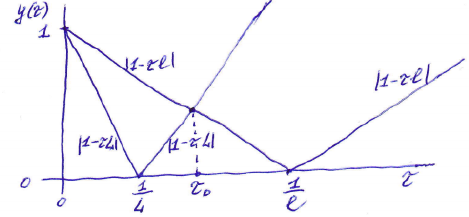
Искомый параметр \tau_0 определяется по точке пересечения линий |1-\tau l| и |1-\tau L|.
Задание. Покажите это.
Из решения уравнения |1-\tau_0 l| = |1-\tau_0 L| следует, что \tau_0 = \frac{2}{l+L}.
Задание. Покажите, что это так.
12
Скорость сходимости определяется величиной q = \max_{\lambda \in [l,L]} |1-\tau_0\lambda| = 1 - \frac{2}{L/l+1} = \frac{L/l-1}{L/l+1} = \frac{1-(l/L)^2}{1+(l/L)^2} можно заметить, что L/l, как известно, задает нижнюю границу для числа обусловленности.
С другой стороны, полагая, что \frac{l}{L} - малая величина, и пренебрегая членами (\frac{l}{L})^2, получим q = \frac{1-l/L}{1+l/L} \approx (1-\frac{l}{L})(1-\frac{l}{L}) \approx 1 - 2\frac{l}{L} \quad (5)
Скорость сходимости можно регулировать изменением величины \tau в каждой итерации. Тогда \delta^{(m+1)} = (E-\tau_{m+1}A)\delta^{(m)} и соответственно \delta^{(m)} = \prod_{j=1}^m (E-\tau_j A)\delta^{(0)}
отсюда ||\delta^{(m)}|| \le \max_{\lambda \in [l,L]} \left|\prod_{j=1}^m (1-\tau_j\lambda)\right| \cdot ||\delta^{(0)}||
Ставится \min \max (минимаксная) задача: надо найти такую последовательность \{\tau_j\}, чтобы на ней указанное произведение достигало минимального значения, т.е. \min_{\{\tau_j\}} \max_{\lambda \in [l,L]} \left|\prod_{j=1}^m (1-\tau_j\lambda)\right|.
Легко видеть, что это полином Чебышёва, значит фактически ставится задача о величине полинома, наименее уклоняющегося от нуля.
13
Такую задачу, как известно, решает многочлен Чебышёва, корни которого: \tau_j = \left[\frac{L+l}{2} + \frac{L-l}{2} \cos \frac{\pi(2j-1)}{2m}\right]^{-1}, \quad j=1,...,m
Для такого чебышёвского набора итерационных параметров \tau_j получается, что (довольно громоздкие промежуточные выкладки не приводятся): q \approx 1-2\sqrt{\frac{l}{L}} \quad (6)
Видно, что q в (6) ощутимо меньше, чем в (5), поскольку $ - $мало. Значит скорость сходимости возрастет, т.е. число итераций, требуемых для достижения заданной точности, уменьшается.
Оценим количество итераций m для обеспечения заданной точности \varepsilon: ||\delta^{(m)}|| \le C q^m < \varepsilon m > \frac{\ln(\varepsilon/C)}{\ln q} \quad (q<1, \ln q < 0)
для МПИ с оптимальным параметром \tau_0: m_{\tau_0} \approx \frac{\ln\varepsilon}{\ln(1-2l/L)} \approx \frac{L}{2l}\ln\frac{1}{\varepsilon} (для простоты оценки C=1)
для МПИ с чебышёвским набором параметров: m_ч \approx \frac{\ln\varepsilon}{\ln(1-2\sqrt{l/L})} \approx \frac{1}{2}\sqrt{\frac{L}{l}}\ln\frac{1}{\varepsilon}
Значит \frac{m_{\tau_0}}{m_ч} \approx \sqrt{\frac{L}{l}}.
Метод итераций с чебышёвским набором параметров позволяет существенно ускорить итерационный процесс, однако он оказывается неустойчивым. Для устранения неустойчивости достаточно переставить итерационные параметры не в их естественном порядке. Такой алгоритм перестановки особенно прост в случае m=2^k шагов.
Так называемый трехслойный метод Чебышёва, не уступая по скорости сходимости, избавлен от этого недостатка.
14
Одним из методов решения СЛАУ является поиск соответствующего экстремума для некоторого функционала. В таком подходе есть определенные достоинства. Методы решения СЛАУ (как правило, изучают поиск минимума - для максимума все аналогично) таким способом позволяют дать представление об отыскании экстремумов многомерных функций, а также об одном из возможном методе решения СНАУ (систем нелинейных алгебраических уравнений).
Решается система линейных алгебраических уравнений (СЛАУ): Ax = b \quad (1) Пусть A - самосопряженный положительно определенный оператор. Так описывается важный класс задач в математической физике, например, краевые задачи для эллиптических уравнений. При необходимости можно произвести симметризацию по Гауссу исходной системы.
Пусть x \in \mathbb{R}^n, где \mathbb{R}^n - n-мерное линейное пространство. Рассмотрим квадратичный функционал от x, называемый функционалом энергии. \Phi(x) = (Ax, x) - 2(b,x) + C \quad (2) Здесь (x,y) - скалярное произведение в \mathbb{R}^n, b \in \mathbb{R}^n, c=\text{const}.
Теорема. Пусть A=A^*>0. Тогда существует единственный элемент y \in \mathbb{R}^n, придающий наименьшее значение квадратичному функционалу (2), являющийся решением СЛАУ (1).
1
СЛАУ (1) имеет единственное решение y, поскольку A является невырожденным оператором в силу его положительной определенности. Покажем, что в этом случае при Ay-b=0 \quad (3) для любого вектора \Delta имеет место \Phi(y+\Delta) > \Phi(y), т.е. при x=y достигается минимум квадратичного функционала \Phi(x).
Действительно, \Phi(y+\Delta) = (A(y+\Delta), y+\Delta) - 2(b,y+\Delta)+C = (Ay+A\Delta, y+\Delta) - 2(b,y+\Delta)+C = (Ay,y) + (Ay,\Delta) + (A\Delta,y) + (A\Delta,\Delta) - 2(b,y) - 2(b,\Delta)+C = [(Ay,y)-2(b,y)+C] + 2(Ay,\Delta)-2(b,\Delta)+(A\Delta,\Delta) = \Phi(y)+2(Ay-b,\Delta)+(A\Delta,\Delta) = \Phi(y)+(A\Delta,\Delta) > \Phi(y), Так как (A\Delta, \Delta) > 0 (A>0). Значит y \Delta имеет место \min \Phi(x).
Докажем, что верно и обратное утверждение. Если элемент доставляет минимальное значение функционалу энергии, то он является решением СЛАУ (3). Из курса математического анализа известно, что в точке минимума должно выполняться условие \text{grad } \Phi(x)=0, A>0. Величина градиента \Phi(x), т.е. \text{grad } \Phi(x) = 2(Ax-b) Задание. Покажите это.
Тогда 2(Ax-b)=0 и значит справедливо (1). Таким образом установлена эквивалентность вариационной задачи (отыскание элемента, придающего \min \Phi(x)) и задачи о нахождении решения СЛАУ.
2
Поиск минимума функции позволяет дать геометрическую интерпретацию решению СЛАУ. Одним из методов минимизации функции многих переменных является метод покоординатного спуска.
Пусть начальные приближения (x_1^0, \dots, x_n^0) в итерационном процессе для поиска минимума функции F(x_1, \dots, x_n). Рассмотрим функцию F(x_1, x_2^0, \dots, x_n^0) как функцию переменной x_1 и найдем точку x_1^1 ее минимума. Для иллюстрации рассмотрим рис. 1 двумерного случая. При уточнении компоненты x_1 происходит смещение по прямой, параллельной оси x_1, до точки с наименьшим на этой прямой значением F(x)=C. Ясно, что эта точка будет точкой касания рассматриваемой прямой и линии уровня F(x)=C. В двумерном случае картинка приближений выглядит как на рис. 1. 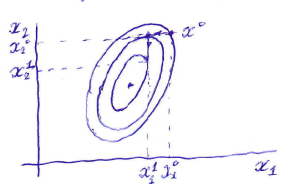
Затем, исходя из нового приближения (x_1^1, x_2^0, \dots, x_n^0), путем минимизации функции F(x_1^1, x_2, \dots, x_n^0) по переменной x_2 находим следующее приближение (x_1^1, x_2^1, \dots, x_n^0). Процесс циклически повторяется.
При рассмотрении \Phi(x) из (2) получаем, что при минимизации по переменной x_k происходит перемещение параллельно x_k до точки, где \Phi'_{x_k} = 0. С учетом полученного выражения для \text{grad } \Phi находим, что 2 \left(\sum_{j=1}^n a_{kj} x_j - b_k\right) = 0 аналогично и для других координат x_2, \dots, x_n.
Задание. Показать, что данное уравнение соответствует уравнению при итерациях Зейделя.
Таким образом, приближения покоординатного спуска минимизации функций и метода Зейделя решения исходной системы совпадают.
3
Способ ускорить этот сходимость итераций по сравнению с методом покоординатного спуска состоит в продвижении в направлении, противоположном направлению \text{grad } \Phi.
Поэтому последующее приближение получается из предыдущего в виде x^{(m+1)} = x^{(m)} - \alpha_m \text{grad } \Phi(x^{(m)}) \quad (4) Приведенное описание не определяет алгоритма однозначно, потому что пока ничего не сказано о выборе параметра \alpha_m.
Итерационный процесс продолжается до выполнения, например, условия ||\text{grad } \Phi(x^{(m)})|| \le \varepsilon, где \varepsilon > 0 - заданная точность.
Для самосопряженной положительно определенной A рельеф поверхности \Phi будет достаточно гладким, регулярным. На рис. 1 показаны линии уровня в случае двумерной поверхности. Точка минимума единственная. Данный тип рельефа называется котловиной, линии уровня здесь похожи на эллипсы.
Но и в этом достаточно простом случае неправильный выбор параметра \alpha_m может привести к тому, что, продвигаясь по линии градиента, можно пройти точку минимума на этом пути и попасть на другую сторону поверхности, так что произойдет удаление от искомого минимума функции \Phi.
Пример. Рассмотрим функцию двух переменных \Phi(x,y) = \frac{x^2}{2} + 4y^2. Очевидно, что точка минимума (x,y)=(0,0). Выберем в качестве начального приближения (x^{(0)},y^{(0)})=(1,1). В соответствии с методом градиентного спуска x^{(m+1)} = x^{(m)} - \alpha_m x^{(m)}, y^{(m+1)} = y^{(m)} - \alpha_m 2y^{(m)}.
Выберем параметр \alpha_m = \alpha = 0.1. Тогда (x^{(1)},y^{(1)})=(0.9,0.8), (x^{(2)},y^{(2)})=(0.81,0.64), (x^{(3)},y^{(3)})=(0.729,0.512) и \Phi(x^{(0)},y^{(0)})=1.25, \Phi(x^{(3)},y^{(3)}) \approx 0.446, т.е. происходит, пусть медленное, но продвижение к точке минимума \Phi.
4
Если же взять параметр \alpha достаточно большим, например, \alpha=2, то получим (x^{(1)},y^{(1)})=(0,-3) и соответственно \Phi(x^{(1)},y^{(1)})=9, что означает существенное отдаление от точки min \Phi=0.
Можно ожидать ускорения сходимости итераций, если параметр \alpha_m выбирать из условия минимума величины \Phi(x^{(m)} - \alpha_m \text{grad } \Phi(x^{(m)})). В этом случае метод называется методом наискорейшего градиентного спуска или просто наискорейшего спуска.
Так как \text{grad } \Phi(x) = 2(Ax-b), то (4) приобретает вид x^{(m+1)} = x^{(m)} - \tau_m(Ax^{(m)}-b), \quad (5) что соответствует записи итерационного метода в форме x^{(m+1)} = (E-\tau_m A)x^{(m)} + \tau_m b. Здесь \tau_m является итерационным параметром, который в методе наискорейшего спуска определяется из условия минимума функции \Phi(x^{(m+1)}) по \tau_m.
Найдем условие этого минимума. Так как \Phi(x^{(m+1)}) = (Ax^{(m+1)},x^{(m+1)}) - 2(b,x^{(m+1)}), то \frac{d}{d\tau_m}\Phi(x^{(m+1)}) = (A \frac{dx^{(m+1)}}{d\tau_m}, x^{(m+1)}) + (Ax^{(m+1)}, \frac{dx^{(m+1)}}{d\tau_m}) - 2(b, \frac{dx^{(m+1)}}{d\tau_m}) = 2(A x^{(m+1)}, \frac{dx^{(m+1)}}{d\tau_m}) - 2(b, \frac{dx^{(m+1)}}{d\tau_m}).
Здесь учтено, что (A \frac{dx^{(m+1)}}{d\tau_m}, x^{(m+1)}) = (\frac{dx^{(m+1)}}{d\tau_m}, A^* x^{(m+1)}) = (\frac{dx^{(m+1)}}{d\tau_m}, A x^{(m+1)}) = (A x^{(m+1)}, \frac{dx^{(m+1)}}{d\tau_m}). Так как A=A^*.
Тогда \frac{d}{d\tau_m} \Phi(x^{(m+1)}) = 2(Ax^{(m+1)}-b, \frac{dx^{(m+1)}}{d\tau_m}) = 2(Ax^{(m+1)}-b, -(Ax^{(m)}-b))
для минимума по \tau_m \frac{d}{d\tau_m}\Phi(x^{(m+1)})=0, значит (Ax^{(m+1)}-b, Ax^{(m)}-b) = (A(x^{(m)}-\tau_m(Ax^{(m)}-b))-b, Ax^{(m)}-b) = ((Ax^{(m)}-b) - \tau_m A(Ax^{(m)}-b), Ax^{(m)}-b)=0 \quad (8) или \tau_m = \frac{(r_m, r_m)}{(Ar_m, r_m)}, где r_m = Ax^{(m)}-b. Вектор r_m называется вектором невязки.
5
Задание. В предыдущем примере сделайте одну итерацию по методу наискорейшего спуска, найдите \tau_0 и \Phi(x^{(1)},y^{(1)}).
Для решения СЛАУ методом наискорейшего спуска находим \tau_m, считая, что x^{(m)} известно. Далее находим оптимальное значение параметра \tau_m по формуле (8), и затем получаем x^{(m+1)} по формуле (5): x^{(m+1)} = x^{(m)} - \tau_m r_m.
Можно доказать, что при указанном оптимальном выборе \tau_m справедлива оценка ||x^{(m)}-x||_A \le \delta_0^m ||x^{(0)}-x||_A, \quad m=0,1,2,3,... где норма вектора введена по формуле ||x||_A = \sqrt{(Ax,x)}. Здесь \delta_0 = \frac{1-\xi}{1+\xi}, \xi=\frac{\lambda_{\min}(A)}{\lambda_{\max}(A)}.
Из приведенной оценки видно, что в методе наискорейшего спуска итерационный процесс сходится как геометрическая прогрессия со знаменателем \delta_0. Если \xi близко к 1, т.е. \lambda_{\min}(A) \approx \lambda_{\max}(A), то \delta_0 \approx 0 и сходимость метода очень быстрая. Если же \xi \approx 0, то \delta_0 близко к 1 и сходимость медленная. В последнем случае у матрицы A число обусловленности \mu велико. В самом деле, так как матрица A - симметричная и положительно определенная, то \mu = \frac{\lambda_{\max}(A)}{\lambda_{\min}(A)} = \frac{1}{\xi}. Значит с точки зрения сходимости невыгодно, чтобы матрица была плохо обусловленной.
Задача. Дана система Ax=b, где A = \begin{pmatrix} 3 & -1 \\ -1 & 1 \end{pmatrix}, b = \begin{pmatrix} 2 \\ -1/2 \end{pmatrix}. используется метод наискорейшего спуска. найти: а) точное решение системы; б) проверить, что A>0; в) найти оптимальное значение \tau_0; г) вычислить первое приближение x^{(1)}; д) вычислить \delta_0 = (1-\xi)/(1+\xi); е) вычислить ||x^{(1)}-x||_A, ||x^{(0)}-x||_A и проверить выполнение оценки ||x^{(1)}-x||_A \le \delta_0 ||x^{(0)}-x||_A.
6
Решение нелинейного уравнения может быть сведено к поиску корней уравнения f(x) = 0, \quad (1) где f(x) - заданная (тем или иным способом) нелинейная функция. Методы решения таких уравнений делятся на двухточечные - использующие информацию о локализации корня (об отрезке, на концах которого функция имеет различные знаки), и одноточечные, в такой информации не нуждающиеся.
Анализ вопроса о локализации корней (1). В этом состоит отдельная задача, эта задача решается средствами математического анализа, особенно важно получить информацию о существовании и единственности решения в некоторой области. Существуют различные методы локализации (отделения, изоляции) корней уравнения (1).
Следующая задача состоит в отыскании корня с заданной точностью.
Данный подход - двухточечный метод. Он достаточно простой и надежный, хотя и не самый быстрый. Для применения этого метода достаточно, чтобы функция f(x) была непрерывна.
Пример. Поясним способ применения метода для функции f(x) = x^3 - 9x^2 + 11x - 2. Эта функция непрерывна, а известные свойства многочлена позволяют заключить, что должно быть либо 1, либо 3 действительных корня. Известно, что если на концах отрезка [a,b] функция f(x) имеет разные знаки, то на отрезке есть по крайней мере один корень.
Построим таблицу
| x | 0 | 1 | 2 | 3 | 4 | 5 | 6 | 7 | 8 |
|---|---|---|---|---|---|---|---|---|---|
| f(x) | -2 | 1 | -8 | -23 | -38 | -47 | -44 | -23 | 22 |
1
Видно, что здесь 3 действительных корня, причём их локализация на отрезках: [0,1], [1,2], [7,8].
Рассмотрим один из таких отрезков: [0,1]. Разделим его пополам и найдем, что f(0.5)=1.375. Так как f(0)f(0.5)<0, то корень расположен на отрезке [0,0.5]. Разделим и этот отрезок пополам и рассмотрим ту её половину, на концах которой функция принимает значения разных знаков. Легко найти корень (также, как и другие 2) с необходимой точностью.
Задание. Найти этот корень с точностью 10^{-4}.
В общем виде метод деления пополам приводит к отрезку на n-м шаге [a_n, b_n], причем b_n - a_n = \frac{b-a}{2^n}, \quad n=0,1,2,3,... \quad (2) если в качестве приближения к решению взять, то x_n = \frac{a_n+b_n}{2}, тогда |x_n-x^*| \le \frac{1}{2}(b-a)2^{-n}, где x^* - точное значение корня уравнения (1), который заведомо находится на отрезке [a_n,b_n].
Итерации продолжаются до тех пор, пока данная величина не станет меньше заданной точности \varepsilon, т.е. \frac{1}{2}(b-a)2^{-n} < \varepsilon.
Замечание. Метод деления пополам надежен, но у него есть недостаток: он не позволяет найти корень четной кратности (рис. 1). Это верно для всех методов, использующих локализацию корней. 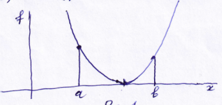 На отрезке [a,b] выполнено условие f(a)f(b)<0. Тем не менее на этом отрезке есть корень чётной кратности.
2
Метод обладает линейной скоростью сходимости с учетом соотношения (2).
Определение. Пусть некоторый итерационный процесс генерирует последовательность \{x_n\}, такую, что x_n \to x^*. Сходимость последовательности \{x_n\} к x^* называется линейной, если \exists такая постоянная C \in (0,1) и такой номер n_0 \ge 0, |x_{n+1}-x^*| \le C |x_n-x^*| \quad \forall n \ge n_0, и сверхлинейной, если существует такая положительная последовательность \{C_n\}, что C_n \to 0 и |x_{n+1}-x^*| \le C_n |x_n-x^*| \quad \forall n \in \mathbb{N}.
Говорят, что последовательность \{x_n\} сходится к x^* по меньшей мере с p-м порядком, если \exists такие константы C>0 и p \ge 1, что |x_{n+1}-x^*| \le C |x_n-x^*|^p. \forall n \in \mathbb{N}, начиная с некоторого n=n_0.
Данный подход входит в класс методов, основанных на интерполяции. Его также относят к разряду методов дихотомии (от греческого слова, означающего деление на две части). Метод секущих основан на линейной интерполяции. Также, как и метод деления пополам, он является двухточечным. Существует в двух вариантах - с проверкой знаков и без проверки знаков.
В первом варианте предполагаем, что задан отрезок локализации корня [a,b], см. рис. 2. Проверяется, что f(a)f(b)<0. 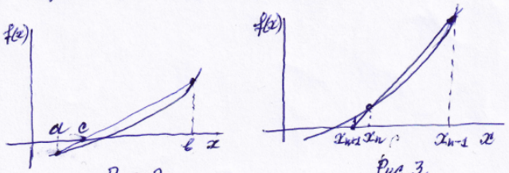
3
Через крайние точки проводится прямая. В отличие от метода деления пополам, который является “пассивным” (т.к. реализуется по заранее заданному плану без учета значений функций), в методе хорд отрезок [a,b] делится точкой c не пополам, а пропорционально величинам f(a) и f(b).
Уравнение прямой \frac{f(x)-f(a)}{x-a} = \frac{f(b)-f(a)}{b-a} Эта прямая пересекает ось абсцисс (y=0) в точке x=c; находим c = a - \frac{f(a)(b-a)}{f(b)-f(a)}.
В качестве следующего отрезка локализации выбирается либо отрезок [a,c], либо отрезок [c,b], на концах которого функция имеет различные знаки.
Метод секущих без проверки знаков не требует обязательной локализации корня на отрезке (см. рис. 3). Через две точки (x_{n-1}, f(x_{n-1})) и (x_n, f(x_n)) проводится прямая. Абсцисса точки пересечения полученной таким образом прямой с осью x и является новым приближением x_{n+1} к решению нелинейного уравнения (рис. 3). Если окажется, что, например, |f(x_{n+1})|<|f(x_n)|, то можно ожидать, что происходит приближение к корню, и в качестве следующей пары точек, через которые надо провести секущую прямую, надо взять x_n и x_{n+1}. Но заметим, что в случае реализации метода секущих без проверки знаков возможен вариант, при котором очередная точка приближения лежит вне области определения функции f(x).
Так как для линейной функции f(x) метод хорд дает корень точно при любой длине отрезка [a,b], то можно рассчитывать на его довольно быструю сходимость, если f(x) близка к линейной. Если при достаточно сильном отклонении от линейности, метод хорд будет проигрывать в скорости сходимости методу половинного деления.
4
Данный подход основывается на квадратичной интерполяции функции. Этот метод является трехточечным, т.е. для построения очередного приближения к нулю функции нам необходимо знать три предыдущие точки приближения x_n, x_{n-1}, x_{n-2}. По трем точкам проводится парабола, из двух точек пересечения с осью x выбирается та, которая ближе к последнему приближению.
Пусть известно, что интересующий нас корень x^* уравнения (1) лежит в интервале (a,b). Приведем уравнение (1) к равносильному уравнению вида x = F(x) \quad (3) Для отыскания решения x_*, принадлежащего интервалу (a,b), зададим начальное приближение x_0, а затем вычислим последующие x_n по формуле x_{n+1} = F(x_n), \quad n=0,1,2,3,... \quad (4)
По построению понятно, что метод является одноточечным и не требует выбора отрезка локализации корня. Известно, что методы вида (4) называются методом простой итерации (МПИ).
Теорема. Если функция F(x) удовлетворяет условию Липшица с постоянной q<1: |F(x)-F(y)| \le q|x-y|, то МПИ (4) сходится и справедлива оценка |x_{n+1}-x_*| \le q^n|x_0-x_*| или |x_{n+1}-x_*| \le \frac{q}{1-q}|x_1-x_0|.
Часто используют итерации, аналогично приведению к виду (3) следующим способом: x = x + \tau f(x), где \tau=\text{const} (5) По приведенной теореме МПИ сходится при |1+\tau f'(x_*)|<1, т.е. при -2 < \tau f'(x_*) < 0. Если в некоторой окрестности корня f'(x)\ne 0 и имеет место оценка 0<m<|f'(x)|<M, то метод релаксации сходится при \tau < 2/M. Наиболее быстрая сходимость будет достигнута при выборе \tau=2/(m+M).
5
Метод Ньютона является одноточечным, т.е. для построения следующего приближения нам нужно знать только одно значение приближенного решения.
Пусть приближение x_n к корню x_* уравнения (1) уже найдено. Будем использовать приближенную формулу f(x) \approx f(x_n) + f'(x_n)(x-x_n), точность которого возрастает при приближении x_n к x_*.
Вместо исходного уравнения (1) воспользуемся линейным уравнением f(x_n) + f'(x_n)(x-x_n) = 0 \quad (6) Решение этого уравнения примем за приближение x_{n+1}. x_{n+1} = x_n - \frac{f(x_n)}{f'(x_n)}, \quad n=0,1,2,3,...
Метод линеаризации Ньютона допускает простую геометрическую интерпретацию (рис. 4). График функции y=f(x) заменяется касательной к нему в точке (x_n, f(x_n)). За приближение x_{n+1} принимается точка пересечения полученной прямой с осью абсцисс. 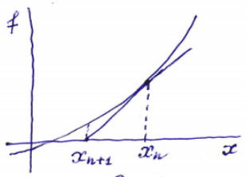
Формулу (6) можно интерпретировать как метод итерационной релаксации 1 F(x) = x - \frac{f(x)}{f'(x)}, т.е. \tau = -\frac{1}{f'(x)}.
Можно показать (это будет сделано в следующей лекции), что при определенных ограничениях на первую и вторую производную f'(x) имеет место квадратичная сходимость метода Ньютона.
Задача. Решить уравнение x=2\text{arctg } x. Использовать МПИ… Рассмотреть три варианта начального приближения x_0=1, x_0=2, x_0=3, показать, что скорость сходимости итераций x_{n+1}=2\text{arctg } x_n слабо зависит от начального приближения: добиться 6 верных знаков после запятой. Использовать также метод Ньютона. Оценить ускорение сходимости таких итераций по сравнению с МПИ.
6
Согласно геометрическому смыслу метода Ньютона сходимость будет происходить тем быстрее, чем линейней и чем круче её график пересекает ось абсцисс. Так что есть смысл потребовать от f(x), чтобы по модулю вторая её производная была ограничена сверху, а первая - снизу.
Будем предполагать, что функция обладает достаточной гладкостью. Пусть всюду на [a,b] |f'(x)| > M_1 > 0; |f''(x)| < M_2. Тогда \exists \varepsilon-окрестность корня x_* (т.е. O_\varepsilon(x_*)), что если нулевое приближение x_0 \in O_\varepsilon(x_*), то итерационный процесс сходится к корню.
Действительно, всюду на отрезке [a,b] |F'(x)| = \left| 1 - \frac{(f'(x))^2 - f(x)f''(x)}{(f'(x))^2} \right| = \left| \frac{f(x)f''(x)}{(f'(x))^2} \right| \le \frac{M_2}{M_1^2}|f(x)| \quad (1)
Из непрерывности f(x) следует, что в некоторой окрестности корня x_* выполнено неравенство |f(x)| \le q\frac{M_1^2}{M_2}, \quad (2) где 0<q<1.
Можно воспользоваться следствием из теоремы прошлой лекции (№9), а именно там рассматривать не “условие Липшица”, а |F'(x)| \le q < 1 \quad (3) в некоторой окрестности корня. Тогда из (3) следует сходимость итераций.
Легко видеть, что из (1) и (2) следует (3), значит и данный итерационный процесс сходится.
7
Рассмотрим разложение функции f(x) для точки x_n (применение отрезка ряда Тейлора). f(x_*) = f(x_n) + f'(x_n)(x_*-x_n) + \frac{1}{2}f''(\xi)(x_*-x_n)^2 = 0, \quad (4) где \xi \in (x_n,x_*) (или \xi \in (x_*, x_n)).
Из ньютоновских итераций следует, что x_{n+1} = x_n - \frac{f(x_n)}{f'(x_n)} = x_n - \frac{f(x_n)}{f'(x_n)} - \frac{f(x_*)}{f'(x_n)} и с учетом (4) получаем x_{n+1} = x_* + \frac{1}{2}\frac{f''(\xi)}{f'(x_n)}(x_*-x_n)^2.
Отсюда |x_{n+1}-x_*| \le \frac{M_2}{2M_1}|x_n-x_*|^2. Значит согласно определению из предыдущей лекции (№9), имеет место для ньютоновских итераций квадратичная сходимость.
Причем справедлива оценка |x_n-x_*| \le \frac{M_2}{2M_1}|x_{n-1}-x_*|^2 \le \frac{M_2}{2M_1} \left( \frac{M_2}{2M_1}|x_{n-2}-x_*|^2 \right)^2 \le \dots \le \left(\frac{M_2}{2M_1}\right)^{2^n-1}|x_0-x_*|^{2^n}.
Таким образом, метод Ньютона быстросходящийся, но важно получить хорошую локализацию начального приближения. Здесь могут помочь априорные оценки первой и второй производной функции, графический метод и т.д. 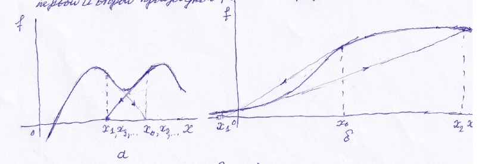
При не очень хорошей локализации может возникнуть “зацикливание” итераций (рис. 1а) или вообще расходимость итераций (рис. 1б), поэтому при выборе x_0, например, для функций, похожих на \text{arctg } x, надо быть внимательным.
8
Метод Ньютона эффективный, но может быть достаточно трудоемким, поскольку в каждой итерации приходится вычислять производную функции.
Самый простой путь для преодоления этой трудности - использование в каждой итерации одного и того же множителя \frac{1}{f'(x_0)}, т.е. счет вести по формуле x_{n+1} = x_n - \frac{f(x_n)}{f'(x_0)}, \quad n=0,1,2,3,... Такой метод называют упрощенным (или огрубленным) методом Ньютона. 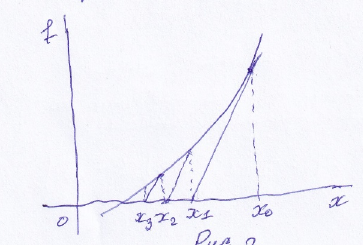
Такой метод имеет очевидную геометрическую интерпретацию: в начальной точке x_0 проводится касательная к графику y=f(x) (первый шаг основного и упрощенного методов Ньютона совпадают), а во всех последующих точках x_1, x_2, x_3, \dots проводятся прямые, параллельные той касательной (рис. 2).
При такой модификации метод Ньютона утрачивает высокую скорость сходимости (процесс не реагирует на изменение наклона кривой коси абсцисс при приближении к корню) и вместо квадратичной имеет место лишь линейная (скорость сходимости геометрической прогрессии).
На получение сверхлинейной скорости сходимости при видоизменении метода Ньютона можно надеяться в случае если f'(x_n) заменяется некоторым близким значением, например, с использованием разностной аппроксимации.
Модификация метода Ньютона тогда может иметь следующий вид (разностный метод Ньютона). x_{n+1} = x_n - \frac{h_n}{f(x_n+h_n)-f(x_n)}. Здесь h_n - малый шаг, причем, делая его сколь угодно малым, можно добиться сколь угодно близкого соответствия такой формулы основной формуле Ньютона, поэтому можно показать квадратичную скорость сходимости метода.
9
По аналогии с основным методом Ньютона могут строиться методы высших порядков сходимости. Вместо формулы (6) в предыдущей лекции запишем: f(x_n) + f'(x_n)(x-x_n) + \frac{1}{2}f''(x_n)(x-x_n)^2 = 0.
Отсюда получаем итерационную схему \frac{f(x_n)}{f'(x_n)} + x_{n+1}-x_n + \frac{1}{2}\frac{f''(x_n)}{f'(x_n)}(x_{n+1}-x_n)^2 = 0.
В квадратичном поправочном члене введем замену x_{n+1}-x_n \approx -\frac{f(x_n)}{f'(x_n)}. Т.е. используем основную формулу Ньютона. Тогда имеем x_{n+1} = x_n - \frac{f(x_n)}{f'(x_n)} - \frac{1}{2}\frac{f''(x_n)}{f'(x_n)}\left(\frac{f(x_n)}{f'(x_n)}\right)^2 = x_n - \frac{f(x_n)}{f'(x_n)} - \frac{f(x_n)^2 f''(x_n)}{2f'(x_n)^3}. Здесь имеет место кубическая скорость сходимости.
В случае кратного корня сходимость обычного метода Ньютона линейная. Действительно, пусть x_* - m-кратный корень. Тогда f(x) = (x-x_*)^m g(x). Имеем в случае обычных (основных) ньютоновских итераций: x_{n+1} = x_n - \frac{f(x_n)}{f'(x_n)} = x_n - \frac{(x_n-x_*)^m g(x_n)}{m(x_n-x_*)^{m-1} g(x_n) + (x_n-x_*)^m g'(x_n)} = x_n - \frac{(x_n-x_*)g(x_n)}{mg(x_n)\left(1+\frac{g'(x_n)}{mg(x_n)}(x_n-x_*)\right)} \approx x_n - \frac{(x_n-x_*)}{m}\left(1-\frac{g'(x_n)}{mg(x_n)}(x_n-x_*)+\dots\right). Значит x_{n+1}-x_* \approx x_n-x_* - \frac{(x_n-x_*)}{m} = \frac{m-1}{m}(x_n-x_*). Т.е. сходимость линейная, например, при m=2, q=1/2.
Модификация Ньютона - Шрёдера: x_{n+1} = x_n - m\frac{f(x_n)}{f'(x_n+1)}. Легко видеть, что в этом случае x_{n+1}-x_* = \frac{g''(x_n)}{2g'(x_n)}(x_n-x_*)^2 + \dots значит сходимость здесь квадратичная.
Задача. Для поиска корней (в точке x_*=1) функции f(x)=x^2(x-1)^2 использовать итерации Ньютона и Ньютона-Шрёдера. Сравнить необходимое число итераций, чтобы получить 3 верные цифры после запятой.
10
Часто для приближения различных функций применяются многочлены. Но в некоторых случаях можно использовать итерационные методы. В частности, итерационный метод Ньютона.
Пусть требуется найти значение функции y=f(a) в заданной точке a_0, т.е. функциональное соответствие x = f(a) зададим неявно уравнением F(a,x) = 0 \quad (5) таким, чтобы: 1) оно было локально эквивалентным (в окрестности точки a) данному; 2) функция F была дифференцируема по второму аргументу; 3) функции F_x, F были легко вычислимы.
При каждом фиксированном a уравнение (5) можно считать уравнением для приближенного поиска требуемого значения x=f(a), т.е. можно использовать метод Ньютона. Для уравнения (5) тогда формула итераций имеет вид x_{n+1} = x_n - \frac{F(a,x_n)}{F'_x(a,x_n)}, \quad n=0,1,2,3... \quad (6) где x_n - заданное начальное приближение для f(a).
Метод Ньютона может быть, например, применен к нахождению арифметических корней. Пусть требуется найти вещественное значение x = \sqrt[m]{a}. Ставим данному задаче уравнению в соответствие уравнение x^m-a=0. Принимаем согласно (5) F(a,x)=x^m-a. Тогда F'_x(a,x)=mx^{m-1} и в согласии с (6) итерационный процесс определяется формулой x_{n+1} = x_n - \frac{x_n^m-a}{mx_n^{m-1}}, или в другом виде.
11
x_{n+1} = \frac{1}{m}((m-1)x_n + \frac{a}{x_n^{m-1}}), \quad n=0,1,2,3,... \quad (6) Особенно простая формула получается в случае квадратного корня при m=2 (формула Герона) x_{n+1} = \frac{1}{2}\left(x_n+\frac{a}{x_n}\right). Здесь F(a,x)=x^2-a, F_x(a,x)=2x, F_{xx}(a,x)=2.
Задача. а) Найти данным методом \sqrt{2}. Проделать 4 итерации, указать (сравнив с известным значением), сколько верных значащих цифр после запятой получается. б) Получить данным методом \sqrt{e} с четырьмя верными значащими цифрами после запятой.
С помощью метода Ньютона можно вычислить обратную величину данного числа a без выполнения операции деления с помощью других арифметических операций. По аналогии с предыдущим ищется корень уравнения a - \frac{1}{x} = 0. После подстановки F(a,x)=a-\frac{1}{x} и F_x(a,x)=\frac{1}{x^2} в (6) получаем итерационный процесс без делений x_{n+1} = x_n - \frac{a-1/x_n}{1/x_n^2} = x_n(2-ax_n), \quad n=0,1,2,3,...
Здесь также, и в других ситуациях с применением метода Ньютона, играет роль выбор начальных условий. При некоторых x_0 итерации могут расходиться. Например, если требуется найти 1/3 и взять x_0=1, получим x_1=1(2-3\cdot 1)=-1, x_2=-1(2-3(-1))=-5, \dots Итерации расходятся.
Можно показать, что итерации сходятся, если x_0 \in (0, 2/a).
12
Выбор области локализации корня представляет проблему. Тем более, что в случае метода Ньютона даже выбор интервала с заведомо существующим единственным корнем не всегда гарантирует, что итерации сойдутся (см. примеры в лекции №10).
Но можно указать простые условия на характер поведения функции f(x), чтобы обеспечить сходимость ньютоновских итераций. Можно, например, потребовать знакопостоянство первой и второй производной f(x), означающих монотонность и определенную выпуклость графика f(x). Но справедлива следующая теорема (принимаем ее без доказательства).
Теорема. Пусть на отрезке [a,b] функция f(x) имеет первую и вторую производные постоянного знака и пусть f(a)f(b)<0. Тогда, если точка начального приближения x_0 выбрана на [a,b] так, что f(x_0)f''(x_0)>0, то начатая с этой точки последовательность \{x_n\}, определяемая методом Ньютона, монотонно сходится к корню x^* \in (a,b) уравнения f(x)=0.
Заметим, что доказательство опирается на теорему Вейерштрасса о сходимости монотонной ограниченной последовательности.
1
Рассмотрим систему из n нелинейных уравнений f(x)=0 \quad (1) здесь f = (f_1, \dots, f_n)^T, x=(x_1, \dots, x_n)^T.
Т.е. (1) представляет собой систему \left\{ \begin{aligned} f_1(x_1, \dots, x_n) &= 0 \\ \dots \\ f_n(x_1, \dots, x_n) &= 0 \end{aligned} \right. x \in \mathbb{R}^n - n-мерное евклидово пространство.
При больших значениях n решение таких систем представляет сложную задачу. Проблемой является уже выбор начального приближения. В прикладных задачах для этого используют физические соображения.
Метод простой итерации (МПИ) От (1) можно различными способами перейти к системе x=\varphi(x), \quad (1') или \begin{aligned} x_1 &= \varphi_1(x_1, \dots, x_n) \\ \dots \\ x_n &= \varphi_n(x_1, \dots, x_n) \end{aligned} Для (1’) можно построить итерационный процесс x^{(m+1)} = \varphi(x^{(m)}).
Определение 1. Область \Omega \subset \mathbb{R}^n называют выпуклой, если наряду с двумя любыми точками a \in \Omega и b \in \Omega она включает все точки отрезка [a,b], т.е. точки с координатами x = a+t(b-a), 0 \le t \le 1.
На рис. 1а показана выпуклая область, на рис. 1б - невыпуклая область. 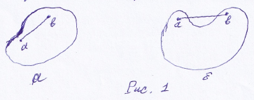
2
Определение 2. Отображение y=\varphi(x) называется сжимающим в замкнутой выпуклой области \Omega, если \exists q: 0 \le q < 1 и \rho(\varphi(x_1), \varphi(x_2)) \le q \rho(x_1,x_2), \forall x_1, x_2 \in \Omega, где \rho(x_1,x_2) - метрика в \mathbb{R}^n.
Теорема. Для сжимающего отображения y=\varphi(x) уравнение (1’) имеет единственное решение x_* и \rho(x_*, x^{(m)}) = \frac{q^m}{1-q}a, где a=\rho(x^{(1)}, x^{(0)}).
Теорема. Достаточное условие сходимости метода простой итерации. Пусть область \Omega \subset \mathbb{R}^n выпуклая, x \in \Omega, а компоненты \varphi_i(x) вектор-функции \varphi(x)=(\varphi_1, \dots, \varphi_n)^T имеют равномерно непрерывные производные первого порядка. Положим, что норма матрицы Якоби \mathcal{J} = \frac{d\varphi(x)}{dx} = \begin{pmatrix} \frac{\partial \varphi_1}{\partial x_1} & \dots & \frac{\partial \varphi_1}{\partial x_n} \\ \vdots & \ddots & \vdots \\ \frac{\partial \varphi_n}{\partial x_1} & \dots & \frac{\partial \varphi_n}{\partial x_n} \end{pmatrix} не превосходит некоторого числа 0 \le q < 1, т.е. ||\mathcal{J}|| \le q < 1, \quad \forall x \in \Omega. Тогда отображение y=\varphi(x) является сжимающим в \Omega, т.е. \rho(\varphi(x_1), \varphi(x_2)) \le q \rho(x_1,x_2).
Пример. Рассмотрим систему уравнений \left\{ \begin{aligned} x+3\lg x - y^2 &= 0 \\ 2x^2 - xy - 5x + 1 &= 0 \end{aligned} \right. \quad (2) Применим для её решения МПИ.
3
Вначале запишем его так \begin{aligned} x^{(m+1)} &= y^{(m)2} - 3\lg x^{(m)} \\ y^{(m+1)} &= 2x^{(m)} + \frac{1}{x^{(m)}} - 5 \end{aligned} т.е. \varphi_1(x,y) = y^2 - 3\lg x, \varphi_2(x,y) = 2x + \frac{1}{x} - 5.
Пусть x^{(0)}=3.4, y^{(0)}=2.2. Выбор такого начального условия обусловлен, в частности, стремлением найти один корень системы (2); геометрическую интерпретацию которого можно видеть на рис. 2. 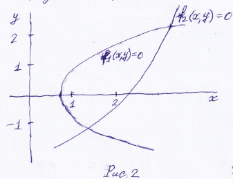 Здесь согласно (2) f_1(x,y) = x+3\lg x - y^2 f_2(x,y) = 2x^2 - xy - 5x + 1
Найдем матрицу Якоби для такого процесса. \mathcal{J} = \begin{pmatrix} \frac{\partial \varphi_1}{\partial x} & \frac{\partial \varphi_1}{\partial y} \\ \frac{\partial \varphi_2}{\partial x} & \frac{\partial \varphi_2}{\partial y} \end{pmatrix} = \begin{pmatrix} -\frac{3\lg e}{x} & 2y \\ 2-x^{-2} & 0 \end{pmatrix}
Задание. Показать, вычислив матрицу Якоби для приведенного начального приближения, что достаточное условие не выполняется.
Рассмотрим другой итерационный процесс \left\{ \begin{aligned} x^{(m+1)} &= \sqrt{x^{(m)}+3\lg x^{(m)}} \\ y^{(m+1)} &= \frac{x^{(m)}(y^{(m)}+5)-1}{2} \end{aligned} \right. т.е. \varphi_1(x,y)=\sqrt{x+3\lg x}, \varphi_2(x,y)=\frac{x(y+5)-1}{2}.
Матрица для этого итерационного метода будет \mathcal{J} = \begin{pmatrix} \frac{\partial \varphi_1}{\partial x} & \frac{\partial \varphi_1}{\partial y} \\ \frac{\partial \varphi_2}{\partial x} & \frac{\partial \varphi_2}{\partial y} \end{pmatrix} = \begin{pmatrix} \frac{1+3\lg e/x}{2\sqrt{x+3\lg x}} & 0 \\ \frac{y+5}{2} & \frac{x}{2} \end{pmatrix}
Задание. Показать, что в окрестности данного начального приближения условие сходимости справедливо. Выполнить 4 итерации.
4
Пусть надо решить систему (1). Аналогично одномерному случаю ограничимся первым членом разложения в ряд Тейлора f(x) \approx f(x^{(m)}) + f'(x^{(m)})(x-x^{(m)}),
Положим, что для следующего приближения f(x^{(m)}) + f'(x^{(m)})(x^{(m+1)}-x^{(m)}) = 0.
В многомерном случае под f'(x^{(m)}) надо понимать якобиан \mathcal{J}(x^{(m)}), т.е. запишем f(x^{(m)}) + \mathcal{J}(x^{(m)})(x^{(m+1)}-x^{(m)}) = 0.
Тогда итерационная схема запишется так x^{(m+1)} = x^{(m)} - \mathcal{J}^{-1}(x^{(m)}).
Якобиан исходной системы имеет вид \mathcal{J} = f'(x) = \frac{df}{dx} = \begin{pmatrix} \frac{\partial f_1}{\partial x_1} & \dots & \frac{\partial f_1}{\partial x_n} \\ \vdots & \ddots & \vdots \\ \frac{\partial f_n}{\partial x_1} & \dots & \frac{\partial f_n}{\partial x_n} \end{pmatrix}
Достаточное условие сходимости метода Ньютона имеет весьма сложный вид, и проверить его на практике бывает трудно. Заметим, что в некоторой малой окрестности решения скорость сходимости метода квадратичная.
Для определения, сошелся ли итерационный процесс, можно вычислять саму функцию f(x), будем полагать, что итерации сошлись, если ||f(x^{(m)})|| < \varepsilon, где \varepsilon - заданная малая величина.
Пример. Решить систему \left\{ \begin{aligned} x^2 - 4x\sqrt{y} + 5y^3 &= 1.5 \\ x^3 + 3xy - y^2 &= 3.5 \end{aligned} \right. Пусть x^{(0)}=1, y^{(0)}=1. Имеем \mathcal{J} = \begin{pmatrix} 2x-4\sqrt{y} & -2x/\sqrt{y}+15y^2 \\ 3x^2+3y & 3x-2y \end{pmatrix}. \mathcal{J}(1,1) = \begin{pmatrix} -2 & 13 \\ 6 & 1 \end{pmatrix}, \quad \mathcal{J}^{-1}(1,1) = -\frac{1}{80}\begin{pmatrix} 1 & -13 \\ -6 & -2 \end{pmatrix}.
5
\begin{pmatrix} x^{(1)} \\ y^{(1)} \end{pmatrix} = \begin{pmatrix} x^{(0)} \\ y^{(0)} \end{pmatrix} - \mathcal{J}^{-1}\begin{pmatrix} f_1(x^{(0)},y^{(0)}) \\ f_2(x^{(0)},y^{(0)}) \end{pmatrix} = \begin{pmatrix} 1 \\ 1 \end{pmatrix} + \frac{1}{80}\begin{pmatrix} 1 & -13 \\ -6 & -2 \end{pmatrix}\begin{pmatrix} -0.5 \\ 0.5 \end{pmatrix} = \begin{pmatrix} 1.0875 \\ 0.975 \end{pmatrix} Задание. Выполните еще 2 итерации для подтверждения, что сходимость имеет место.
Пример. Найти приближенное решение системы \left\{ \begin{aligned} x^2+y^2+z^2 &= 1 \\ 2x^2+y^2-4z &= 0 \\ 3x^2-4y+z^2 &= 0 \end{aligned} \right. Пусть x^{(0)}=y^{(0)}=z^{(0)}=0.5. \mathcal{J} = \begin{pmatrix} 2x & 2y & 2z \\ 4x & 2y & -4 \\ 6x & -4 & 2z \end{pmatrix}. \mathcal{J}_0 = \begin{pmatrix} 1 & 1 & 1 \\ 2 & 1 & -4 \\ 3 & -4 & 1 \end{pmatrix}, \quad \mathcal{J}_0^{-1} = -\frac{1}{40}\begin{pmatrix} -15 & -5 & -5 \\ -14 & -2 & 6 \\ -11 & 7 & -1 \end{pmatrix}. \begin{pmatrix} x^{(1)} \\ y^{(1)} \\ z^{(1)} \end{pmatrix} = \begin{pmatrix} 0.5 \\ 0.5 \\ 0.5 \end{pmatrix} + \frac{1}{40}\begin{pmatrix} -15 & -5 & -5 \\ -14 & -2 & 6 \\ -11 & 7 & -1 \end{pmatrix}\begin{pmatrix} -0.25 \\ -1.25 \\ -1.00 \end{pmatrix} = \begin{pmatrix} 0.875 \\ 0.500 \\ 0.375 \end{pmatrix} Для второго приближения \mathcal{J}_1 = \begin{pmatrix} 1.75 & 1 & 0.75 \\ 3.50 & 1 & -4 \\ 5.25 & -4 & 0.75 \end{pmatrix}, \quad \mathcal{J}_1^{-1} = -\frac{1}{64.75}\begin{pmatrix} -15.25 & -3.75 & -4.75 \\ -23.625 & -2.625 & 9.625 \\ -19.25 & 12.25 & -1.75 \end{pmatrix}. \begin{pmatrix} x^{(2)} \\ y^{(2)} \\ z^{(2)} \end{pmatrix} = \begin{pmatrix} x^{(1)} \\ y^{(1)} \\ z^{(1)} \end{pmatrix} - \mathcal{J}_1^{-1}\begin{pmatrix} f_1(x^{(1)},y^{(1)},z^{(1)}) \\ f_2(x^{(1)},y^{(1)},z^{(1)}) \\ f_3(x^{(1)},y^{(1)},z^{(1)}) \end{pmatrix} = \begin{pmatrix} 0.78981 \\ 0.49662 \\ 0.36993 \end{pmatrix} Задание. Выполнить еще 1 итерацию, указать, сколько значащих цифр после запятой можно считать надежными.
6
Рассмотренные в предыдущей лекции методы решения СНАУ могут быть достаточно эффективными. Но у них есть общий недостаток: локальный характер сходимости. Что затрудняет их применение в случаях, что бывает достаточно часто, когда имеются проблемы с выбором хороших начальных приближений.
Можно существенно ослабить влияние такого выбора, если использовать вместо непосредственного решения СНАУ, связанную с ней вариационную задачу. То есть надо поставить задачу нахождения данной нелинейной системы как оптимизационную, иначе экстремальную задачу. Такой подход использовался уже при решении систем линейных алгебраических уравнений (СЛАУ).
Рассмотрим систему из n нелинейных уравнений \left\{ \begin{aligned} f_1(x_1, \dots, x_n) &= 0 \\ \dots \\ f_n(x_1, \dots, x_n) &= 0 \end{aligned} \right. \quad (1) Введем в рассмотрение функцию \Phi(x) = \sum_{i=1}^n f_i^2(x), \quad (2) где x=(x_1, \dots, x_n)^T. Очевидно, что эта функция неотрицательна, т.е. \Phi(x) \ge 0. Тогда минимум достигается, если f_i(x_*)=0, i=1,\dots,n. Понятно, что x_* является корнем системы (1). Верно и обратное утверждение.
Можно построить итерационный метод решения системы (1), связанный с поиском минимума (2), а именно известный уже нам метод градиентного спуска.
7
Найдем градиент \Phi(x): \text{grad } \Phi(x) = (\frac{\partial \Phi}{\partial x_1}, \dots, \frac{\partial \Phi}{\partial x_n})^T \quad (3) Этот вектор показывает направление наибольшего роста функции \Phi(x). В противоположном направлении функция убывает наиболее быстро.
Построим итерационный процесс следующим образом: x_{n+1} = x_n - \tau \text{grad } \Phi(x_n), \quad (4) Здесь \tau - шаг спуска (итерационный параметр).
Итерации продолжаются до выполнения заданного условия окончания процесса поиска минимума, например, ||\text{grad } \Phi(x_n)|| < \varepsilon, \quad \varepsilon > 0
Метод наискорейшего спуска (он уже был описан в лекции №7) был связан с поиском такого \tau, чтобы функция \Phi(x) максимально уменьшила свое значение. Т.е. мы рассматриваем в (4) x_{n+1} как функцию \tau и ищем \min_\tau \Phi(x_{n+1}(\tau)), следовательно ищем корень уравнения \Phi'_\tau(x_{n+1}(\tau)) = \frac{d}{d\tau}\Phi(x_n-\tau \text{grad } \Phi(x_n)) = 0.
Полагая, что в каждой итерации параметр \tau_n свой, строим итерации так \Phi'_\tau(x_n(\tau_n)) = \Phi'_\tau(x_0-\tau_1\text{grad}\Phi(x_0))=0. Здесь x_0 - начальное приближение. Находим \tau_1 из приведенного условия. Тогда в качестве первого приближения возьмем x_1 = x_0 - \tau_1 \text{grad}\Phi(x_0). Далее процесс повторяется.
Задание. Рассмотрим функцию двух переменных из лекции №7. \Phi(x,y) = \frac{x^2}{2} + y^2. Проделать одну итерацию методом наискорейшего спуска, найдя \tau_0, полагая, что (x_0,y_0)=(1,1).
8
В таком методе решения СНАУ могут обнаруживаться свои проблемы, например, итерации могут сходиться достаточно медленно. Достоинство метода в том, что на каждом шаге у нас функция одной переменной.
Пример. Будем решать методом наискорейшего спуска систему из лекции №11 \left\{ \begin{aligned} x^2-4x\sqrt{y}+5y^3 &= 1.5 \\ x^3+3xy-y^2 &= 3.5 \end{aligned} \right. x^{(0)}=y^{(0)}=1. Имеем \Phi = (x^2-4x\sqrt{y}+5y^3-1.5)^2+(x^3+3xy-y^2-3.5)^2 \text{grad } \Phi(1,1) = (-8,12) x^{(1)}=1+8\tau, \quad y^{(1)}=1-12\tau.
Далее введем функцию Z(\tau) = \Phi(1+8\tau, 1-12\tau). Задание. Решить уравнение Z'(\tau)=0, найти его корень \tau_1 и положить x^{(1)}=1+8\tau_1, y^{(1)}=1-12\tau_1. Сравнить x^{(1)} и y^{(1)} с первой итерацией решения этой СНАУ из лекции №11.
Теперь можно подойти к общей задаче поиска минимума функции.
Определение. Пусть на множестве U, состоящем из элементов u линейного метрического пространства, определена скалярная функция \Phi(u). 1. Говорят, что \Phi(u) имеет локальный минимум на элементе u^*, если существует его конечная \varepsilon-окрестность, в которой выполнено \Phi(u^*) \le \Phi(u), \quad ||u-u^*|| \le \varepsilon. 2. \Phi(u) достигает глобального минимума в U на элементе u^{**} (строгий, абсолютный минимум), если имеет место равенство \Phi(u^{**}) = \inf_{u \in U} \Phi(u).
9
Замечание. Если U - числовая ось, решается задача нахождения функции одного переменного. Если U - n-мерное векторное пространство, решается задача нахождения минимума функции n переменных. Если U - функциональное пространство, то решается задача на отыскание функции, доставляющей минимум функционалу (задача оптимального управления или динамического программирования).
Задача поиска экстремума функции является настолько же важной, как и задачи поиска решений СЛАУ, нелинейных уравнений и СНАУ. Поиск экстремума и решения уравнений имеют, как было показано, соответствие. Обычно говорят о поиске минимума функции, поскольку максимум \Phi(u) является минимумом функции (-\Phi(u)). \Phi(u) называется целевой функцией.
Положим, что необходимо найти минимум целевой функции \Phi(u), у которой существуют первые производные. В этом случае задача сводится к решению СНАУ \left\{ \begin{aligned} \frac{\partial \Phi(u_1, \dots, u_n)}{\partial u_1} &= 0 \\ \dots \\ \frac{\partial \Phi(u_1, \dots, u_n)}{\partial u_n} &= 0 \end{aligned} \right. Точка, являющаяся решением указанной СНАУ, называется стационарной. Однако не всякая стационарная точка может быть точкой локального минимума целевой функции.
Справедлива следующая теорема (принимаем без доказательства). Теорема. Пусть функция \Phi(u) дважды непрерывно дифференцируема. Тогда достаточным условием того, чтобы стационарная точка u^* была точкой локального минимума, является положительная определенность матрицы Гессе G(u^*) = \begin{pmatrix} \frac{\partial^2\Phi}{\partial u_1^2} & \dots & \frac{\partial^2\Phi}{\partial u_1 \partial u_n} \\ \vdots & \ddots & \vdots \\ \frac{\partial^2\Phi}{\partial u_n \partial u_1} & \dots & \frac{\partial^2\Phi}{\partial u_n^2} \end{pmatrix}.
10
Пусть U=[a,b], т.е. отрезок числовой оси. Разобьем его на n равных частей с узлами в точках u_i = a+i(b-a)/n; \quad i=0,1,2,3,\dots,n. Вычислив значение \Phi(u) в этих точках, найдем путем сравнения точку u^*, в которой \Phi(u^*) = \min_{0 \le i \le n} \Phi(u_i).
Далее полагаем \tilde u \approx u_{\min}, \tilde \Phi \approx \Phi(u^*). Погрешность в определении \tilde u этого простейшего метода не превосходит числа \varepsilon_n = \frac{b-a}{n}.
Этот метод прост, но неэкономичен, особенно когда ищется минимум функции многих переменных. Например, данный метод можно сделать более эффективным, если сначала определить минимум с грубым шагом, затем уже искать минимум с меньшим шагом на том из отрезков [u_i, u_{i+1}], на котором предполагается наличие минимума. Можно и далее уточнять решение задачи таким же образом.
Усовершенствованием этого метода являются методы исключения отрезков.
В таком подходе отрезок [a,b] делится на 3 части выбором внутри отрезка точек u_1, u_2, в которых вычисляются значения целевой функции. Сравнив ее значения в этих точках, можно сократить отрезок поиска минимума, перейдя к отрезку [a,u_2], если \Phi(u_1) \le \Phi(u_2) или [u_1,b], если \Phi(u_1) > \Phi(u_2). Эту процедуру можно продолжить. Здесь предполагается, что на отрезке [a,b] находится одна точка минимума целевой функции \Phi(u).
Если вычисление функции не требует больших затрат, имеет смысл сокращать отрезок как можно сильнее, и тогда в методе дихотомии точки u_1, u_2 выбираются близко к середине отрезка.
11
Пусть u_1 = \frac{b+a-\Delta}{2}, u_2 = \frac{b+a+\Delta}{2}, где \Delta достаточно мало. Поскольку отношение \frac{b-u_1}{b-a} к \frac{u_2-a}{b-a} близко к \frac{1}{2}, такой выбор объясняется стремлением обеспечить максимальное уменьшение отрезков.
В конце вычислений в качестве приближенного значения u^* берется середина последнего отрезка. В результате n итераций длина отрезка будет \Delta_n = \frac{b-a}{2^n} + \left(\frac{1}{2} + \frac{1}{2^2} + \dots + \frac{1}{2^n}\right)\Delta = \frac{b-a}{2^n} + \left(1-\frac{1}{2^n}\right)\Delta. Т.е. точность определения составляет u^* \varepsilon_n = \frac{\Delta_n}{2}.
Находя n из условия \varepsilon_n \le \varepsilon, получим количество итераций, необходимое для достижения данной точности: n \ge \log_2 \frac{b-a-\Delta}{2\varepsilon-\Delta}. Если в предыдущем неравенстве положить \Delta малой, то \varepsilon_n \approx \frac{b-a}{2^{n+1}}.
Задача. Методом деления отрезка пополам найти точку локального минимума для функции f(x)=x^2+e^{-x}-x на отрезке [0,1] с точностью \varepsilon=10^{-2}.
12
Такой подход также, как и метод дихотомии, связан с исключением отрезков, что является более эффективным способом поиска минимума по сравнению, например, с методом перебора. Но теперь на каждом шаге вычислений (на каждой итерации) будет вычисляться не два новых значения функции, а одно. Что может ощутимо сократить время вычислений, если нахождение значения функции - есть дорогостоящая операция.
Заметим, что, как и раньше, предполагается, что на изучаемом отрезке [a,b] функция имеется один минимум. Причём будем считать, что этот минимум на данном отрезке локализации глобальный, для этого требуется, чтобы функция была унимодальной, т.е. была монотонной по обе стороны от точки минимума (непрерывность функции при этом не требуется).
Причем имеет смысл сокращать отрезки локализации минимума так, чтобы наиболее эффективно использовать значение в пробной точке, оставшееся от предыдущего шага вычислений на новом отрезке локализации. Для простоты рассмотрим отрезок [0,1]. Найдем расположение точек x_1, x_2 на [0,1], и для определенности положим, что при его уменьшении исключается его правая часть. 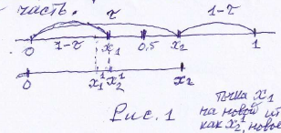 x_1=1-\tau, x_2=\tau.
Точка x_1 остается той же, но на новой итерации обозначает её как x_2', новое меньшее значение x_1'.
1
Из соображений симметрии точки x_1, x_2 должны быть расположены симметрично относительно середины, см. рис. 1.
На новом отрезке [0,x_2'] (исключена правая часть [x_2,1]) введем новую точку, причем будет деление отрезков [0,1] и [0,x_2'] в одном и том же отношении, т.е. \frac{x_2-x_1}{x_2} = \frac{1-\tau}{1}. Здесь x_2'=x_1 (введено обозначение на новой итерации такое, что большее значение из двух точек имеет нижний индекс 2”) Отношение меньшей части отрезка ко всему отрезку одно и то же, причем x_2-x_1 = 2\tau-1.
Тогда \frac{2\tau-1}{\tau} = \frac{1-\tau}{1}, отсюда получаем уравнение \tau^2+\tau-1=0. положительный корень его \tau = \frac{\sqrt{5}-1}{2} \approx 0.61803... Т.е. x_1=1-\tau=(3-\sqrt{5})/2, x_2=\tau=(\sqrt{5}-1)/2.
Для отрезка [a,b] x_1=a+(3-\sqrt{5})(b-a)/2, x_2=a+(\sqrt{5}-1)(b-a)/2. Точки x_1,x_2 обладают следующим свойством: каждая из них делит отрезок [a,b] на две неравные части так, что отношение длины всего отрезка к длине его большей части равно отношению длин большей и меньшей части (или обратная пропорция этих величин). Точки, обладающие таким свойством, называются точками золотого сечения.
На каждой итерации отрезок поиска минимума уменьшается в одном и том же отношении \tau=(\sqrt{5}-1)/2, поэтому в результате n итераций длина становится равной \Delta_n = \tau^n(b-a). Следовательно, точность \varepsilon_n определения точки минимума после n итераций равна \varepsilon_n = \Delta_n/2 = ((\sqrt{5}-1)/2)^n(b-a)/2.
Задание. Сравнить точность вычислений \Delta_n за n итераций по методу дихотомии и по методу золотого сечения. Формально метод дихотомии быстрей сходится, но приходится в два раза больше вычислений, что может быть очень важным.
2
Можно упомянуть ещё некоторые методы поиска минимума. В предыдущих подходах учитывались значения функции в рассматриваемых точках. Учесть информацию о значениях функции между точками позволяют методы полиномиальной аппроксимации. Основная идея заключается в том, что функция \Phi(u) аппроксимируется полиномом, а точка его минимума служит приближением и к u^*. В этом случае, кроме свойства унимодальности, необходимо на \Phi(u) наложить и требования достаточной гладкости для её полиномиальной аппроксимации.
Для повышения точности поиска u^* можно как увеличивать степень полинома, так и уменьшать пробный отрезок. Поскольку первый приём приводит к заметному увеличению вычислительной работы и появлению дополнительных экстремумов, обычно пользуются полиномами второй (метод парабол) или третьей (метод кубической интерполяции) степени.
Задача. Требуется найти точку минимума унимодальной функции на отрезке длины 1 с точностью \varepsilon=0.02. Имеется возможность измерить не более 10 значений f(x). Какой из методов поиска минимума можно использовать для этого?
Спектральные задачи - вычислительно наиболее трудоемкие задачи в прикладной линейной алгебре. Различают полную и частичную проблемы собственных значений. В первом случае необходимо отыскать все собственные значения числа матрицы, во втором - лишь максимальное по абсолютной величине собственное число. Различают также самосопряженную спектральную задачу и задачу для произвольной матрицы. Очевидно, самосопряженная проблема решается проще - спектр самосопряженной матрицы всегда действительный.
В случае частичной проблемы часто требуется найти наибольшее и наименьшее по модулю собственные числа, знание этих величин позволяет делать заключения о сходимости тех или иных итерационных методов, оптимизировать параметры таких методов, учитывать влияние на результаты решения
3
алгебраических задач, погрешностей исходных данных и вычислительных погрешностей.
Пусть дана квадратная матрица порядка n. Число \lambda называется собственным значением матрицы A, если система линейных однородных уравнений Ax = \lambda x \quad (1) при \lambda=\lambda_0 имеет нетривиальное решение x_0 \ne 0. Известно, что система (1) имеет нетривиальное решение тогда и только тогда, когда определитель системы равен нулю: \Delta(\lambda) = |A-\lambda I| = 0 \quad (2). Если раскрыть определитель в левой части уравнения (2), то получим относительно \lambda многочлен степени n, и значит надо решить уравнение \lambda^n+p_1\lambda^{n-1}+\dots+p_{n-1}\lambda+p_n=0 \quad (3).
На первый взгляд проблема вычисления собственных значений решается просто: достаточно найти все корни полученного уравнения (3). Но при больших n оба шага (раскрытие определителя и нахождение корней уравнения) связаны с большими вычислительными трудностями.
Рассмотрим простой метод решения частичной проблемы собственных значений. Пусть о вещественной матрице A известно, что это матрица простой структуры. Это означает, что A имеет ровно n линейно независимых собственных векторов (базис): x_1 = \begin{pmatrix} x_{11} \\ \vdots \\ x_{n1} \end{pmatrix}, \dots, x_n = \begin{pmatrix} x_{1n} \\ \vdots \\ x_{nn} \end{pmatrix}. Пусть нумерация этих векторов отвечает упорядочению соответствующих им собственных чисел по убыванию модулей (где первое из неравенств - строгое): |\lambda_1| > |\lambda_2| \ge \dots \ge |\lambda_n| \quad (4).
Ставится задача вычисления (приближенного) наибольшего по модулю собственного числа \lambda_1 и соответствующего ему собственного вектора x_1 данной матрицы A.
4
Рассмотрим следующий итерационный процесс x^{(s+1)} = Ax^{(s)} \quad (5) (он не сходится в обычном смысле).
Разложим нулевое приближение по собственным векторам матрицы x^{(0)} = \sum_{i=1}^n c_i x_i. Тогда x^{(s)} = A^s x^{(0)} = A^s (\sum_{i=1}^n c_i x_i) = \sum_{i=1}^n c_i A^s x_i = \sum_{i=1}^n c_i \lambda_i^s x_i = \lambda_1^s \left(c_1 x_1 + c_2\left(\frac{\lambda_2}{\lambda_1}\right)^s x_2 + \dots + c_n\left(\frac{\lambda_n}{\lambda_1}\right)^s x_n\right).
Так как \left(\frac{\lambda_i}{\lambda_1}\right)^s \ll 1, то x^{(s)} \approx \lambda_1^s c_1 x_1. Т.е. вектор x^{(s)} сходится к собственному вектору по направлению. Очевидно, что из (4) имеем x^{(s+1)} = Ax^{(s)} \approx A(\lambda_1^s c_1 x_1) = \lambda_1^{s+1} c_1 x_1 = \lambda_1(\lambda_1^s c_1 x_1) = \lambda_1 x^{(s)}. Значит \lambda_1 \approx \frac{x_j^{(s+1)}}{x_j^{(s)}}.
Процесс сходится линейно со знаменателем q=|\lambda_2/\lambda_1|. Полагаем, что процесс практически сошелся, если соотношения соответствующих координат векторов x^{(s+1)} и x^{(s)} с требуемой точностью одинаковы и не меняются в последних итерациях. При этом для получения собственного значения |\lambda_1| целесообразно положить |\lambda_1| = \sqrt{\frac{(x^{(s+1)},x^{(s+1)})}{(x^{(s)},x^{(s)})}}
5
Отметим, что при расчетах на ЭВМ после проведения каждой итерации может потребоваться нормировать вектор x^{(s+1)}, чтобы не получить переполнений (или исчезновения чисел).
Пример. A = \begin{pmatrix} -7 & 4 & 5 \\ 4 & -6 & -9 \\ 5 & -9 & -8 \end{pmatrix}. Пусть x^{(0)} = \begin{pmatrix} 1 \\ 0 \\ 0 \end{pmatrix}. Тогда x^{(1)}=Ax^{(0)} = \begin{pmatrix} -7 & 4 & 5 \\ 4 & -6 & -9 \\ 5 & -9 & -8 \end{pmatrix} \begin{pmatrix} 1 \\ 0 \\ 0 \end{pmatrix} = \begin{pmatrix} -7 \\ 4 \\ 5 \end{pmatrix}. (x^{(0)},x^{(0)})=1^2+0^2+0^2=1, (x^{(1)},x^{(1)})=(-7)^2+4^2+5^2=90. |\lambda_1| \approx \sqrt{\frac{(x^{(1)},x^{(1)})}{(x^{(0)},x^{(0)})}} = \sqrt{90} \approx 9.487.
x^{(2)}=Ax^{(1)} = \begin{pmatrix} -7 & 4 & 5 \\ 4 & -6 & -9 \\ 5 & -9 & -8 \end{pmatrix} \begin{pmatrix} -7 \\ 4 \\ 5 \end{pmatrix} = \begin{pmatrix} 90 \\ -97 \\ -111 \end{pmatrix}. |\lambda_1| \approx \sqrt{\frac{(x^{(2)},x^{(2)})}{(x^{(1)},x^{(1)})}} = \sqrt{\frac{90^2+(-97)^2+(-111)^2}{90}} = \sqrt{\frac{8100+9409+12321}{90}} \approx 18.2.
Задание. Проделайте еще одну итерацию (возможно, используя нормирование, деля числитель и знаменатель на одно и то же большое число) и сравните |\lambda_1| с точным значением.
Таким же подходом может быть вычислено минимальное по модулю собственное число \lambda_n. Пусть вместо (4) последнее неравенство будет строгим: |\lambda_1| \ge |\lambda_2| \ge \dots > |\lambda_n|. Тогда \frac{1}{|\lambda_n|} > \frac{1}{|\lambda_{n-1}|} > \dots > \frac{1}{|\lambda_1|}.
Для обратной матрицы A^{-1} из (1) следует, что A^{-1}x = \frac{1}{\lambda}x, и для поиска \frac{1}{\lambda_n} можно использовать степенной метод для поиска максимального собственного числа |\lambda_n|.
Задача. Задана матрица A = \begin{pmatrix} 1 & 0 & 1 \\ 0 & 2 & 1 \\ 1 & 1 & 3 \end{pmatrix}. Найти максимальное по модулю собственное значение. Проделать необходимое число итераций, чтобы эта приближенная величина отличалась от точного значения не на 5%.
6
Рассмотрим некоторые подходы к решению полной задачи на собственные числа. Будем опираться на матричное преобразование подобия. Подобными называются матрицы А и В = С⁻¹АС, где С – произвольная невырожденная матрица.
Свойство 1. Пусть \lambda и x соответственно собственное число и собственный вектор матрицы B = C⁻¹AC. Тогда \lambda и Cx – соответственно собственное число и собственный вектор матрицы А. Для того, чтобы убедиться в справедливости этого свойства, подставим выражение B = C⁻¹AC в верное равенство Bx = \lambdax. Имеем C⁻¹ACx = \lambdax, откуда после умножения слева на матрицу С получаем равенство ACx = \lambdaCx, означающее справедливость утверждения. Следовательно, преобразование подобия сохраняет неизменным спектр любой матрицы.
Свойство 2. Пусть А – n \times n – матрица простой формы (это понятие определялось в предыдущей лекции), а матрицы \Lambda = \text{diag}(\lambda_i) и X=(x_1; \dots ; x_n) образованы из ее собственных векторов соответственно. Тогда справедливо равенство \Lambda = X^{-1}AX. В самом деле, то, что \lambda_i и x_i являются соответственно собственным числом и собственным вектором матрицы А означает, что Ax_i = \lambda_i x_i \quad \forall i \in \{1, ..., n\}. Эти n равенств могут быть записаны в виде одного матричного равенства AX = X\Lambda. В силу простой структуры А, все ее собственные векторы, т.е. столбцы матрицы Х, линейно независимы, поэтому матрица Х обратима. Умножив последнее равенство слева на матрицу X⁻¹, получим нужное представление *** Λ = X⁻¹AX.
Так как для диагональной матрицы Λ, образованной из собственных чисел, собственными векторами могут служить единичные векторы исходного базиса (действительно, Леᵢ = λᵢeᵢ ∀і∈ {1, …, n}), то, применяя к последнему случаю свойство 1 с C = Х и с x=еᵢ (т.е. с Cx = Xeᵢ = xᵢ), приходим к другой формулировке свойства 2: Если λᵢ и еᵢ – соответственно собственное число и собственный вектор матрицы Λ = diag(λᵢ) = X⁻¹AX, то λᵢ и xᵢ – соответственно собственное число и собственный вектор матрицы А (обозначения те же, что и выше).
В случае симметричных вещественных матриц у них есть полная ортонормированная система собственных векторов. Тогда заявленная выше матрица Х из собственных векторов будет ортогональной (X⁻¹ = Xᵀ). Значит как следствие свойства 2 можно записать следующее равенство Λ = XᵀAX.
Таким образом, для всякой симметричной матрицы А найдется диагональная матрица Λ, ей ортогонально подобная. Вопрос теперь стоит в том, каким методом добиться хотя бы приближенно последнего равенства, которое позволило бы найти сразу все собственные числа матрицы А (элементы диагонали матрицы Λ) и все соответствующие им собственные векторы (столбцы матрицы Х)? Одна из возможностей состоит в применении к А последовательности однотипных преобразований, сохраняющих спектр и приводящих в пределе данную матрицу к диагональному виду.
Данные методы достаточно громоздки. Остановимся на других также итерационных подходах, которые применимы и в случае несимметричных задач. Такие алгоритмы приближенного решения полной проблемы собственных значений основаны на приведении матриц к подобным им матрицам не диагонального, а треугольного вида.
Достаточно простой алгоритм вычисления собственных чисел опирается на LU-разложение матрицы. Пусть данная n \times n матрица А представлена в виде A= LU, где L и U – соответственно нижняя и верхняя треугольные матрицы. Обозначим А₁ = UL, тогда U=A₁L⁻¹ (заметим, что в общем случае произведение матриц некоммутативно, т.е. LU≠ *** UL). Подставив это выражение матрицы U в равенство А = LU, получаем новое представление А: A = LA₁L⁻¹, (1) которое говорит о подобии матриц А и А₁, т.е. о равенстве их собственных чисел λA и λA₁.
Если матрица А₁ может быть, как и А, представлена в виде произведения нижней L₁ и верхней U₁, то, положив А₂ = U₁L₁ и выразив отсюда U₁=A₂L₁⁻¹, аналогично предыдущему получим A₁=L₁A₂L₁⁻¹ (2) Следовательно, А₁ подобна А₂ и, значит, λA₁ = λA₂.
Суперпозиция этих двух преобразований, т.е. подстановка (2) в (1) дает выражение А через А₂: A = LL₁A₂L₁⁻¹L⁻¹ = LL₁A₂ (LL₁)⁻¹, непосредственно утверждающее равенство собственных чисел λA и λA₂.
Такой процесс построения последовательности подобных матриц и составляет основу LU-алгоритма. Он определяется фактически двумя формулами: Aₙ = LₙUₙ и Aₙ₊₁ = UₙLₙ, (3) где А₀=А, n=0, 1, 2, 3, …, причем первая из этих формул означает процедуру треугольной факторизации матрицы Аₙ на n-м шаге, а вторая – простое умножение верхней треугольной матрицы на нижнюю.
При ряде ограничений на матрицу А (простейшим из которых является, в частности, требование, чтобы все ее собственные числа были различны по модулю) доказано, что итерационный процесс (3) осуществим и формируемая им последовательность Аₙ сводится к треугольным матрицам. Причем на диагонали стоят собственные числа, матрица верхнетреугольная, если при LU-факторизации фиксируется единичная диагональ у матрицы L, и матрица нижнетреугольная, если фиксируется – у матрицы U. *** Пример. Рассмотрим, как ведет себя LU-алгоритм (3), примененный к нахождению собственных чисел матрицы А= \begin{pmatrix} 2 & 1 \\ 6 & 1 \end{pmatrix} Будем фиксировать единичную диагональ у U.
Выполнив LU разложение (для этого используется соответствующий алгоритм и формулы из материала по прямым методам решения СЛАУ), получим A_0=A=L_0U_0=\begin{pmatrix}2 & 0 \\6 & -2\end{pmatrix} \begin{pmatrix}1 & 0.5 \\0 & 1\end{pmatrix} Перемножая L₀ и U₀ в обратном порядке, получим матрицу A_1=U_0L_0=\begin{pmatrix}5 & -1 \\6 & -2\end{pmatrix}. Факторизуя эту матрицу аналогично предыдущему, имеем A_1=L_1U_1=\begin{pmatrix}5 & 0 \\6 & -0.8\end{pmatrix}\begin{pmatrix}1 & -0.2 \\0 & 1\end{pmatrix}, откуда A_2=U_1L_1=\begin{pmatrix}3.8 & 0.16 \\6 & -0.8\end{pmatrix}. Видно, что уже на этом шаге диагональные элементы отличаются от точных значений собственных чисел, равных 4 и -1, на 0.2. Причем выше главной диагонали стоит малая величина. Следующий шаг дает A_2=L_2U_2=\begin{pmatrix}3.8 & 0 \\6 & -1.0526\end{pmatrix}\begin{pmatrix}1 & -0.0421 \\0 & 1\end{pmatrix}, A_3=U_2L_2=\begin{pmatrix}4.0526 & 0.0443 \\6 & -1.0526\end{pmatrix}. Матрица позволяет указать собственные числа с погрешностью 0.05. * Задача.** Применить LU-алгоритм к матрице A=\begin{pmatrix}6 & -2 \\4 & 0\end{pmatrix} и сравнить результат третьего шага с точно найденными собственными числами.
Важным фактором, ограничивающим применение LU-метода является его недостаточно хорошая численная устойчивость. Данный фактор может играть существенную роль на фоне возможной неустойчивости самой несимметричной проблемы собственных значений.
Одним из более устойчивых методов численного решения несимметричных спектральных алгебраических задач является так называемый QR-алгоритм. Приведем основные черты этого подхода, сходного в принципе с LU-алгоритмом. Данный алгоритм опирается на теорему о вещественном разложении.
Теорема (Шура). Для любой вещественной n × n матрицы А найдется такая вещественная ортогональная n × n матрица Q, что Q^TAQ = \begin{pmatrix} R_{11} & R_{12} & \dots & R_{1m} \\ 0 & R_{22} & \dots & R_{2m} \\ \vdots & \vdots & \ddots & \vdots \\ 0 & 0 & \dots & R_{mm} \end{pmatrix}, где Rᵢᵢ - либо вещественное число, либо 2 × 2 матрица с комплексно сопряженными собственными значениями.
Строится последовательность матриц по формулам Aₙ=QₙRₙ и Aₙ₊₁=RₙQₙ, (4) первая из которых означает разложение матрицы А в произведение ортогональной Qₙ и правой треугольной (это равносильно верхне треугольной) Rₙ, а вторая — перемножение полученных в результате факторизации Аₙ матриц Qₙ и Rₙ в обратном порядке.
Аналогично предыдущему на основе свойства ортогональных матриц Qₙᵀ = Qₙ⁻¹, в соответствии с (4) можно записать представление данной матрицы А в виде A = Q₀Q₁ … Qₙ₋₁QₙAₙ₊₁Qₙᵀ Qₙ₋₁ᵀ … Q₁ᵀ Q₀ᵀ, или иначе *** A = (Q₀Q₁ … Qₙ₋₁Qₙ)Aₙ₊₁(Q₀Q₁ … Qₙ)⁻¹. Следовательно, любая из матриц последовательности (Аₙ) ортогонально подобна матрице А.
При определенных ограничениях, одним из которых опять выступает требование, чтобы матрица А не имела равных по модулю собственных значений, генерируемая процессом (4) последовательность матриц (Аₙ) сходится к матрице правой треугольной формы с диагональю из собственных чисел.
Скорость аннулирования поддиагональных частей матриц Аₙ линейна и зависит, как и во многих других методах, от отношений |λᵢ|/|λⱼ| при i > j (полагаем |λ₁|>|λ₂| > … > |λₙ|).
Наличие комплексно сопряженных пар собственных чисел у данной вещественной матрицы А не является, вообще говоря, препятствием для применения QR-алгоритма; просто в этом случае предельной матрицей для последовательности (Аₙ) будет матрица квазитреугольного (иначе, блочно-треугольного) вида. Каждой комплексной паре собственных чисел в такой матрице будет соответствовать диагональный 2 × 2 блок, причем сходимость здесь наблюдается по форме матрицы, а не поэлементно, т.е. элементы внутри этих блоков могут изменяться без видимой зависимости от n при сохранении неизменными их собственных чисел. ***
(дополнительная) ### Решение переопределенных СЛАУ О. Переопределенной называется система уравнений, когда число уравнений больше числа неизвестных. Ax=b A = \begin{pmatrix} a_{11} & \dots & a_{1n} \\ \vdots & \ddots & \vdots \\ a_{m1} & \dots & a_{mn} \end{pmatrix}, \quad x = \begin{pmatrix} x_1 \\ \vdots \\ x_n \end{pmatrix}, \quad b = \begin{pmatrix} b_1 \\ \vdots \\ b_m \end{pmatrix} \left\{ \begin{aligned} a_{11}x_1 + \dots + a_{1n}x_n &= b_1 \\ \vdots \\ a_{m1}x_1 + \dots + a_{mn}x_n &= b_m \end{aligned} \right. \quad (1) m>n
Система (1), как правило, не имеет классического решения, т.е. не существует такого набора чисел x_1, \dots, x_n, который обращает каждое из уравнений (1) в тождество.
Один из важных подходов для решения таких проблем - метод наименьших квадратов (МНК). Будем минимизировать сумму квадратов невязок. Для этих невязок r_1, \dots, r_m имеем: \begin{aligned} a_{11}x_1 + \dots + a_{1n}x_n - b_1 &= r_1 \\ \vdots \\ a_{m1}x_1 + \dots + a_{mn}x_n - b_m &= r_m \end{aligned} Требуем, чтобы r_1^2 + \dots + r_m^2 \to \min
Значит минимизирующая функция имеет вид: \Phi(x_1, \dots, x_n) = \sum_{i=1}^m (a_{i1}x_1 + \dots + a_{in}x_n - b_i)^2 * Эта функция, являясь неотрицательной квадратичной, имеет единственную точку минимума (x_1^*, \dots, x_n^*). Этот вектор по отношению к исходной системе (1) называют нормальным псевдорешением**.
Для определения такого решения записываем систему \frac{\partial\Phi(x_1, \dots, x_n)}{\partial x_i} = 0, \quad i=1, \dots, n или, выполняя дифференцирование, получим \left\{ \begin{aligned} 2\sum_{i=1}^m a_{i1}(a_{i1}x_1 + \dots + a_{in}x_n - b_i) &= 0 \\ \vdots \\ 2\sum_{i=1}^m a_{in}(a_{i1}x_1 + \dots + a_{in}x_n - b_i) &= 0 \end{aligned} \right. Эта система имеет n уравнений и n неизвестных, ей может быть придан стандартный вид СЛАУ: \left\{ \begin{aligned} \left(\sum_{i=1}^m a_{i1}^2\right)x_1 + \dots + \left(\sum_{i=1}^m a_{i1}a_{in}\right)x_n &= \sum_{i=1}^m b_i a_{i1} \\ \vdots \\ \left(\sum_{i=1}^m a_{in}a_{i1}\right)x_1 + \dots + \left(\sum_{i=1}^m a_{in}^2\right)x_n &= \sum_{i=1}^m b_i a_{in} \end{aligned} \right. Решение этой СЛАУ может быть получено каким-либо методом решения однозначно определенных линейных систем.
Заметим, что выбор функции Ф имеет некоторый произвол, можно ввести, например, некоторые веса c_i: \Phi(x_1, \dots, x_n) = \sum_{i=1}^m c_i(a_{i1}x_1 + \dots + a_{in}x_n - b_i)^2 * Пример.** Рассмотрим систему трех уравнений с двумя неизвестными: \left\{ \begin{aligned} x_1 + 2x_2 &= 8.5 \\ 2x_1 + x_2 &= 6.7 \\ x_1 + 3x_2 &= 11.1 \end{aligned} \right. 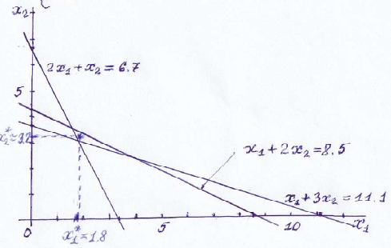 n=2, m=3
Получаем систему: Задание. Вычислить все её коэффициенты \left\{ \begin{aligned} 6x_1 + 7x_2 &= 33 \\ 7x_1 + 14x_2 &= 57 \end{aligned} \right. Решение этой СЛАУ x_1^*=1.8, x_2^*=3.171. Эта точка нанесена на график. ***